Was ist ein Atom und ein Molekül?
(что такое атом и что такое молекула)?
Das Wort «Atom» stammt aus dem Griechischen, und bedeutet wörtlich «unzertrennlich» (слово «атом» пришло к нам из греческого языка и дословно означает "неделимый").
Früher hat man noch nicht gewusst, dass Atome aus verschiedenen Teilen bestehen (раньше люди не знали, что атомы состоят из различный частичек; man – кто-угодно, любой из) und dass ein Atom nicht wirklich das kleinste Teil einer Substanz ist (и что атом, на самом деле, не самая маленькая частица вещества). Heute weiss man, dass auch ein Atom aus zertrennbaren Teilen besteht (сейчас мы знаем, что атом состоит из отдельных частичек), aber trotzdem aus historischen Gründen heisst nun das Atom so, wie es heisst (и все же по историческим причинам атом называется атомом или "неделимым").
Ein Atom ist so aufgebaut (атом построен таким образом): in seinem Zentrum ist ein sehr kleiner Kern (в центре его находится очень маленькое ядро); um den Kern herum bewegen sich Elektronen auf Kreisbahnen – so wie Satelliten um die Erde (вокруг ядра движутся электроны – как спутники вокруг земли).
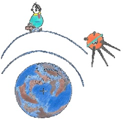Elektronen haben eine sehr wichtige Aufgabe, sie befestigen getrennte Atome in Moleküle und bilden so neue Substanzen (электроны имеют очень важное назначение, они скрепляют отдельные атомы в молекулы, образуя новые вещества). So sind zum Beispiel Sauerstoff (O) und Wasserstoff (H) getrennte Atome (так, например, кислород и водород являются отдельными атомами). Wenn sich nun ein Sauerstoff – und zwei Wasserstoff Atome verbinden (когда же соединяются один атом кислорода и два атома водорода), bilden sie ein Wassermolekül, und dann eine Menge Wasser Moleküle bilden eine Substanz: Wasser (образуют они молекулу воды, а затем множество молекул воды создают вещество, называемое Вода)!

Alle Atome unterscheiden sich nur in der Grösse von Kern und Anzahl Elektronen von einander (все атомы отличаются друг от друга только размером ядра и количеством электронов). Das leichteste Atom ist Wasserstoff, in Symbolischer Schreibweise des periodischen Systems H, es hat nur ein Elektron auf seinem Orbit (самый легкий атом водород (его символ в периодической системе – H) содержит только один электрон на своей орбите).
Das Wort «Atom» stammt aus dem Griechischen, und bedeutet wörtlich «unzertrennlich».
Früher hat man noch nicht gewusst, dass Atome aus verschiedenen Teilen bestehen und dass ein Atom nicht wirklich das kleinste Teil einer Substanz ist. Heute weiss man, dass auch ein Atom aus zertrennbaren Teilen besteht, aber trotzdem aus historischen Gründen heisst nun das Atom so, wie es heisst.
Ein Atom ist so aufgebaut: in seinem Zentrum ist ein sehr kleiner Kern; um den Kern herum bewegen sich Elektronen auf Kreisbahnen – so wie Satelliten um die Erde.
Elektronen haben eine sehr wichtige Aufgabe, sie befestigen getrennte Atome in Moleküle und bilden so neue Substanzen. So sind zum Beispiel Sauerstoff (O) und Wasserstoff (H) getrennte Atome. Wenn sich nun ein Sauerstoff – und zwei Wasserstoff Atome verbinden, bilden sie ein Wassermolekül, und dann eine Menge Wasser Moleküle bilden eine Substanz: Wasser H2O!
Alle Atome unterscheiden sich nur in der Grösse von Kern und Anzahl Elektronen von einander. Das leichteste Atom ist Wasserstoff, in Symbolischer Schreibweise des periodischen Systems H, es hat nur ein Elektron auf seinem Orbit.
Was ist ein Elektron?
(что такое электрон?)
Elektronen sind winzige kugelförmige, negativ geladene Teilchen (электроны это крошечные круглые, отрицательно заряженные частички; winzig – крохотный, крошечный, ничтожный).
Das Wort «Elektron» stammt aus dem Griechischen, und bedeutet «Bergstein» (слово электрон происходит из греческого и означает «янтарь»). Warum haben die Griechen ihm so einen Namen gegeben (почему же греки дали ему такое имя)? Weil die alten Griechen gemerkt haben, dass wenn man Bergstein mit einem Tuch reibt, wird er leichte Objekte zu sich ziehen (потому, что древние греки заметили, что если янтарь натереть тряпочкой, то он будет притягивать к себе легкие предметы; reiben – тереть, натирать). Wenn ich meine Haare mit einer Plastikbürste bürste (если я расчесываю мои волосы пластмассовой расческой), bin ich immer sauer, dass die Haare in alle Richtungen stehen, sich zu die Bürste ziehen (я все время злюсь, что волосы торчат во всех направлениях, притягиваются к расческе), aber das ist nur ein Beispiel eines elektrischen Phänomens (но это – только один пример электрических явлений).
Eine besondere Eigenschaft von Elektronen ist die elektrische Ladung (особенное свойство электронов это электрический заряд). du kannst diese Eigenschaft nicht sehen, hören oder spüren (ты не можешь видеть, слышать или почувствовать его), aber man weiß, dass diese Eigenschaft immer da ist (но мы знаем, что это свойство всегда здесь). Es gibt zwei Arten von elektrischer Ladung: Positive und Negative (электрический заряд бывает двух разных типов: положительный и отрицательный). Elektronen haben eine negative Ladung, und der Kern von Atomen ist positiv geladen (у электронов заряд отрицательный, а у атомного ядра заряд положительный).
In der Natur funktioniert alles so (в природе все функционирует следующим образом): das was negativ geladen ist liebt es, mit dem zusammen zu sein was positiv geladen ist – sie ziehen sich an (то, что заряжено отрицательно любит быть вместе с тем, что заряжено положительно – они притягиваются друг к другу). Wenn aber positiv auf positiv trifft (oder negativ auf negativ), was passiert dann (но если встречаются два предмета с положительным (или два предмета с отрицательным зарядом))? Natürlich, sie stoßen sich ab (конечно, они друг от друга отталкиваются).
Alle elektrischen Apparate funktionieren dank dieser Eigenschaft vom elektrische Ladung (все электрические устройства работают благодаря этому свойству электрических зарядов; funktionieren – функционировать, действовать, работать). Dein Spielzeug das fahren oder singen kann, der Fernseher, Licht, und vieles mehr (твои игрушки, которые могут двигаться или звучать, телевизор, свет и многое другое).
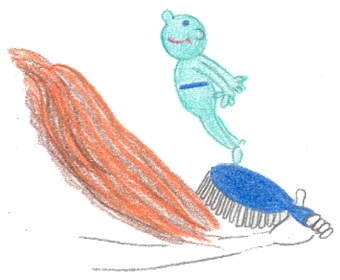Und wie wird es zwischen verschiedenen Objekten funktionieren (а как же это (свойство) функционирует = проявляется между различными предметами)? Warum knistern manchmal meine Haare, wenn ich sie mit einer Plastikbürste bürste (почему мои волосы иногда потрескивают, если я расчесываю их пластмассовой расческой; knistern – потрескивать, трещать)?
Haare und Bürste, wie normalerweise andere Objekte auch, haben gleich viele positive und negative Ladungen (волосы и расческа, как обычно и другие объекты содержат одинаковое количество положительных и отрицательных зарядов). Also wenn ich vor dem Spiegel stehe, und die Bürste liegt im Schrank, passiert nichts (итак, если я стою перед зеркалом, а расческа лежит, например, в шкафу, ничего не происходит). Wenn ich aber anfange meine trockene Haare zu bürsten (но если я начинаю причесываешь сухие волосы), können durch die Reibung ein Teil der Elektronen von einem Objekt zum anderen springen (то при трении часть электронов может перепрыгнуть с одного предмета на другой). Einer wird zu viel Elektronen haben (один из них (волосы или расческа) будет содержать избыток электронов), und wird deshalb eine negative Ladung bekommen (и поэтому получает отрицательный заряд); andere verliert Elektronen und werden dadurch positiv geladen (другой же теряет электроны и вследствие этого заряжается положительно). Darum können sie ganz gut miteinander auskommen und sie ziehen sich an (из-за этого они могут прекрасно ладить и притягиваются друг к другу).
Die Distanz auf welche sie sich noch «hören», oder «fühlen» können, heißt elektrisches Feld (расстояние на котором электрические заряды еще «слышат» или «чувствуют» друг друга, называется электрическим полем). Mit dem elektrischen Feld kannst du Ladungen in die eine oder andere Richtung zwingen: der elektrische Strom erziehen (электрическим полем можно заставить заряды двигаться в одну или другую сторону, создать электрический ток).
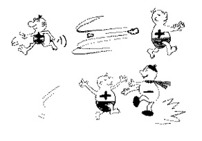Elektronen sind winzige kugelförmige, negativ geladene Teilchen.
Das Wort «Elektron» stammt aus dem Griechischen, und bedeutet «Bergstein». Warum haben die Griechen ihm so einen Namen gegeben? Weil die alten Griechen gemerkt haben, dass wenn man Bergstein mit einem Tuch reibt, wird er leichte Objekte zu sich ziehen. Wenn ich meine Haare mit einer Plastikbürste bürste, bin ich immer sauer, dass die Haare in alle Richtungen stehen, sich zu die Bürste ziehen, aber das ist nur ein Beispiel eines elektrischen Phänomens.
Eine besondere Eigenschaft von Elektronen ist die elektrische Ladung. Du kannst diese Eigenschaft nicht sehen, hören oder spüren, aber man weiß, dass diese Eigenschaft immer da ist. Es gibt zwei Arten von elektrischer Ladung: Positive und Negative. Elektronen haben eine negative Ladung, und der Kern von Atomen ist positiv geladen.
In der Natur funktioniert alles so: das was negativ geladen ist liebt es, mit dem zusammen zu sein was positiv geladen ist – sie ziehen sich an. Wenn aber positiv auf positiv trifft (oder negativ auf negativ), was passiert dann? Natürlich, sie stoßen sich ab.
Alle elektrischen Apparate funktionieren dank dieser Eigenschaft vom elektrische Ladung. Dein Spielzeug das fahren oder singen kann, der Fernseher, Licht, und vieles mehr.
Und wie wird es zwischen verschiedenen Objekten funktionieren? Warum knistern manchmal meine Haare, wenn ich sie mit einer Plastikbürste bürste?
Haare und Bürste, wie normalerweise andere Objekte auch, haben gleich viele positive und negative Ladungen. Also wenn ich vor dem Spiegel stehe, und die Bürste liegt im Schrank, passiert nichts. Wenn ich aber anfange meine Trockene Haare zu bürsten, können durch die Reibung ein Teil der Elektronen von einem Objekt zum anderen springen. Einer wird zu viel Elektronen haben, und wird deshalb eine negative Ladung bekommen; andere verliert Elektronen und werden dadurch positiv geladen. Darum können sie ganz gut miteinander auskommen und sie ziehen sich an.
Die Distanz auf welche sie sich noch «hören», oder «fühlen» können, heisst elektrisches Feld. Mit dem elektrischen Feld kannst du Ladungen in die eine oder andere Richtung zwingen: der elektrische Strom erziehen.
Was ist Geruch?
(что такое запах?)
Gerüche spielen im menschlichen und tierischen Leben eine ganz große Rolle (запахи играют в жизни человека и животных очень большую роль).
Für Tiere ist Geruch sogar meistens eine Frage von Leben und Tod (для зверей запах – это даже чаще всего вопрос жизни и смерти). Bienen finden Blumen dadurch, dass Blumen ihre Dufte überall verteilen (пчелы находят цветы по аромату, распространенному ими; verteilen – распределять; раздавать; размещать).
Kleine süße Katzen, riesige Tiger, Panter und andere Raubkatzen (маленькие милые кошечки огромные тигры, пантеры и другие хищные кошки), verbringen viel Zeit mit waschen (проводят много времени за умыванием), dies damit sie nicht so stark riechen und es ihnen leichter wird zu jagen (для того, чтобы пахло от них как можно меньше и чтобы им легче было бы охотиться), dann nämlich wird es sehr schwer für ihre Beute sie zu bemerken (ибо жертве будет очень сложно их заметить; nämlich – так как, ибо; ведь). Andere hingegen, ganz im Gegenteil zu den Katzen, versuchen mehr zu riechen (другие же, наоборот, в отличие от кошек, стараются пахнуть побольше) – Geruch bedeutet dann, zum Beispiel, bei den Stinktieren ihre «Geheimwaffe» für Notfälle und zur Verteidigung (в таком случае запах, например, у скунсов является секретным оружием крайней необходимости и защиты).
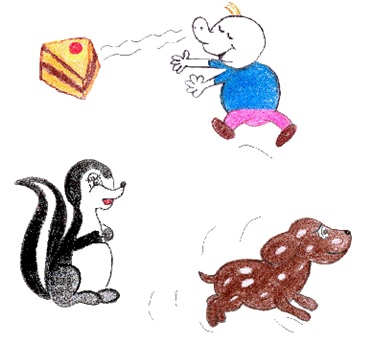Wir Menschen kaufen ja extra Parfüm, damit alles gut riecht – wir selbst auch (мы люди намеренно покупаем духи, для того чтобы все вокруг хорошо пахло – и мы тоже…)
Was ist nun ein Geruch (что же такое запах)? Alles im Universum besteht aus Molekülen, und Moleküle bestehen aus Atomen (все на свете состоит из молекул, а молекулы из атомов). Wenn du dieses Buch von Beginn liest (если ты читаешь эту книгу с самого начала), dann weißt du das schon (тогда ты знаешь уже об этом).
Jeder Geruch besteht natürlich auch aus Molekülen (каждый запах состоит, конечно, тоже из молекул), und weil Menschen und Tiere dafür spezielle Organe haben (и так как люди и животные имеют для этого специальные органы) um auf solche Moleküle zu reagieren (для реакции на такие молекулы), können wir sie spüren (мы можем = способны их чувствовать). Wir haben eine Nase dafür (для этого нам служит нос).
Es gibt immer etwas in der Luft (в воздухе все время присутствует что-то), was solche speziellen Moleküle freisetzt, die wir dann riechen können (что высвобождает эти специальные молекулы, которые мы можем обонять; freisetzen – освобождать; высвобождать). Eben deshalb so liegt immer ein Geruch in der Luft (именно поэтому в воздухе постоянно присутствует запах; eben – именно).
So sagen wir zum Beispiel: «es riecht nach Frühling» (так, например мы говорим: «пахнет весной»); das ist so, weil in dieser Jahreszeit viele Pflanzen anfangen zu blühen (это так, потому в это время года что начинают цвести многие растения). Ihre Blätter und Blüten geben der Luft diesen besonderen Geruch (их листья и цветы дают воздуху особенный запах), so dass wir Menschen eben sagen können, dass wir den Frühling riechen (так, что мы, люди, можем сказать, что мы обоняем весну = чувствуем приход весны).
Gerüche spielen im menschlichen und tierischen Leben eine ganz große Rolle.
Für Tiere ist Geruch sogar meistens eine Frage von Leben und Tod. Bienen finden Blumen dadurch, dass Blumen ihre Dufte überall verteilen.
Kleine süße Katzen, riesige Tiger, Panther und andere Raubkatzen, verbringen viel Zeit mit waschen, dies damit sie nicht so stark riechen und es ihnen leichter wird zu jagen, dann nämlich wird es sehr schwer für ihre Beute sie zu bemerken. Andere hingegen, ganz im Gegenteil zu den Katzen versuchen mehr zu riechen – Geruch bedeutet dann, zum Beispiel, bei den Stinktieren ihre «Geheimwaffe» für Notfälle und zur Verteidigung.
Wir Menschen kaufen ja extra Parfüm, damit alles gut riecht – wir selbst auch. Was ist nun ein Geruch? Alles im Universum besteht aus Molekülen, und Moleküle bestehen aus Atomen. Wenn du dieses Buch von Beginn liest, dann weißt du das schon.
Jeder Geruch besteht natürlich auch aus Molekülen, und weil Menschen und Tiere dafür spezielle Organe haben um auf solche Moleküle zu reagieren, können wir sie spüren. Wir haben eine Nase dafür.
Es gibt immer etwas in der Luft, was solche speziellen Moleküle freisetzt, die wir dann riechen können. Eben deshalb so liegt immer ein Geruch in der Luft.
So sagen wir zum Beispiel: «es riecht nach Frühling»; das ist so, weil in dieser Jahreszeit viele Pflanzen anfangen zu blühen. Ihre Blätter und Blüten geben der Luft diesen besonderen Geruch, so dass wir Menschen eben sagen können, dass wir den Frühling riechen.
Was ist ein Metall?
(что такое металл?)
Woher weiß man (откуда мы знаем), und warum kann man sagen (и почему мы можем сказать), dass gerade dieses Material ist ein Metall (что именно этот материал является металлом)?
Alle Metalle unterscheiden sich von anderen Substanzen dadurch, dass sie die Eigenschaft besitzen elektrischen Strom gut zu leiten und Hitze sehr gut zu übertragen (все металлы отличаются от других веществ тем, что они обладают свойством хорошо проводить электрический ток и очень хорошо передавать тепло; leiten – физ. проводить; übertragen – передавать, транслировать).
Das ist so, weil in den Atomen von Metallen zwischen einem und drei Elektronen sind, die weit weg vom Atomkern leben (это из-за того, что в атомах металлов от одного до трех электронов живут далеко от атомного ядра).
Leider können nicht alle Elektronen auf der gleichen Entfernung vom Atomkern sein – also alle auf ein und demselben Orbit – denn dafür haben Sie keinen Platz (к сожалению, не все электроны в атоме могут сразу разместиться на одном каком-то расстоянии от ядра, для этого они не имеют места = им не хватает места; ein und derselbe – один и тот же, тот же самый). Das gilt für alle Atome und natürlich auch für Metalle (это относится ко всем атомам и, конечно, также к металлам).
Lass uns zusammen ein bisschen fantasieren, um das Elektronenleben in Metallatomen besser zu verstehen (давай-ка пофантазируем вместе немножко для того, чтобы лучше представить жизнь электронов в атомах металлов). Nehmen wir mal als Beispiel das Sodium Atom, das du in der Zeichnung sehen kannst (возьмем в качестве примера атом натрия, который ты можешь видеть на картинке). Sodium ist ein Metall und sein Atom enthält 11 Elektronen (натрий является металлом, и его атом содержит 11 электронов). Stellen wir uns folgendes vor (давай представим с тобой следующее):
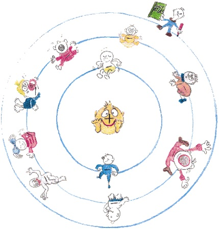Der Sodium Atomkern ist ein großer Junge, der im Zentrum vom Atom sitzt, mit einem «+» Zeichen auf der Nase (атомное ядро натрия – это большой мальчик, сидящий в центре атома со знаком + на носу). Atomkerne sind übrigens immer positiv geladen (ядра атомов, кстати, всегда заряжены положительно; geladen – заряженный). Um ihn rum kreisen kleine Kinder, die noch dazu immer am Rotieren sind (вокруг него кружатся маленькие детишки, которые к тому же вращаются вокруг самих себя kreisen – двигаться по кругу, rotieren – вращаться вокруг самого себя), und es ist immer so (и всегда так = бывает так), dass auf dem ersten Orbit – der am nächsten beim Atomkern ist – nur zwei Elektronen (in unserem Beispiel kleine Kinder) zusammen reisen können (что на первой орбите – той которая является наиболее близкой к ядру – только два электрона (в нашем примере малыша) могут путешествовать вместе). Das ist einfach so, weil es ein ganz kleiner Orbit ist, auf dem kein Platz für andere Elektronen ist (просто потому, что эта орбита совсем маленькая, на ней нет места для других электронов). Dafür können auf dem zweiten Orbit schon acht Kinder (Ops! wir wollten sagen Elektronen) zusammen leben (зато на второй орбите уже восемь малышей (ой, мы хотели сказать электронов) могут жить вместе)! Sehr weit vom Atomkern entfernt, auf dem dritten Orbit, können wie viele Kinder zusammen kreisen (очень далеко = далеко-далеко от атомного ядра на третьей орбите, сколько электронов могут кружиться вместе; entfernt – отдаленный, удаленный, дальний)?
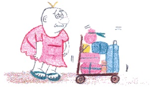Rechnen wir mal; also 2 auf dem ersten plus 8 auf dem zweiten Orbit (давай подсчитаем; итак две на первой плюс 8 на второй орбите). Jetzt haben wir nur noch einen übrig (сейчас у нас остался только один; übrig – остальной), der mit dem traurigen Gesicht und dem Weltatlas unter dem Arm (тот что на картинке с печальным выражением лица и картой мира под мышкой). Für andere Metalle, mit mehr Elektronen als das Sodium Atom (для других металлов, с большим количеством электронов, чем у атома натрия) können auf dem letzten Orbit – der am weitesten vom Kern entfernt – bis zu drei Elektronen sein (на последней орбите – самой отдаленной от ядра – число электронов может достигать и трех). Sie sind so traurig, weil sie weit weg vom Atomkern reisen müssen (они так опечалены тем, что они должны = необходимостью путешествовать далеко от ядра), dass sie von ihrem Orbit «springen» wie von einer Stufe, verlassen ihn, und treffen sich mit ihren Freunden, Elektronen die auch von ihrem letzten Stufe «gesprungen» sind (что они «спрыгивают» с этой орбиты, как со ступеньки и встречаются со своими друзьями, электронами, которые тоже «спрыгнули» со своей последней ступеньки). Die reisen dann zusammen, aber nicht mehr im Kreis um einen Atomkern, sondern zwischen Atomen, und überhaupt nicht mehr auf einem Orbit (затем они путешествуют все вместе, но уже не вокруг атомного ядра, а между атомами и совсем не по орбитали; sondern – но, а (после отрицания)).
Atome, die die Elektronen verloren haben, werden Ionen genannt (атомы, лишившиеся электронов, называют ионами). Ionen sind positiv geladene Partikel (ионы – положительно заряженные частицы). du weißt schon, dass geladene Partikel – Elektronen mit negativer Ladung und Ionen mit positiver Ladung – elektrischen Strom produzieren können (ты уже знаешь, что заряженные частички – электроны с отрицательным зарядом и ионы с положительным – могут производить электрический ток). Das ist so, weil ein elektrischer Strom ein Fluss von geladenen Partikeln ist (это так, потому что электрический ток является потоком заряженных частичек).
Ionen haben aber einen großen Nachteil gegenüber Elektronen (ионы же имеют один существенный недостаток по сравнению с электронами; gegenüber – по сравнению), denn Sie sind viel grösser und schwerer und haben deswegen keinen Platz sich zu treffen und zusammen zu reisen (ведь они намного больше и тяжелее, и поэтому им не хватает места встречаться и путешествовать вместе). Ein Elektron ist sehr viel kleiner, es kann also leichter zwischen Atomen durchgleiten (электрон намного меньше, поэтому ему легче проскальзывать между атомами).
du kannst oft über Metalle hören, denn sie sind sehr wichtig in unserem Leben (ты можешь часто слышать о металлах, так как они очень важны в нашей жизни). Es gibt viele Metalle, und ich bin sicher, du kennst schon einige ihrer Namen, zum Beispiel: Kupfer Cu, Eisen Fe, Silber Ag, Gold Au, und so weiter (металлов много и я уверена, что ты знаешь уже некоторые их названия, например: медь, железо, серебро, золото и так далее).
Woher weiß man, und warum kann man sagen, dass gerade dieses Material ist ein Metall?
Alle Metalle unterscheiden sich von anderen Substanzen dadurch, dass sie die Eigenschaft besitzen elektrischen Strom gut zu leiten und Hitze sehr gut zu übertragen.
Das ist so, weil in den Atomen von Metallen zwischen einem und drei Elektronen sind, die weit weg vom Atomkern leben.
Leider können nicht alle Elektronen auf der gleichen Entfernung vom Atomkern sein – also alle auf ein und demselben Orbit – denn dafür haben Sie keinen Platz. Das gilt für alle Atome und natürlich auch für Metalle.
Lass uns zusammen ein bisschen fantasieren, um das Elektronenleben in Metallatomen besser zu verstehen. Nehmen wir mal als Beispiel das Sodium Atom, das du in der Zeichnung sehen kannst. Sodium ist ein Metall und sein Atom enthält 11 Elektronen. Stellen wir uns folgendes vor: der Sodium Atomkern ist ein großer Junge, der im Zentrum vom Atom sitzt, mit einem «+» Zeichen auf der Nase. Atomkerne sind übrigens immer positiv geladen. Um ihn rum kreisen kleine Kinder, die noch dazu immer am Rotieren sind, und es ist immer so, dass auf dem ersten Orbit – der am nächsten beim Atomkern ist – nur zwei Elektronen (in unserem Beispiel kleine Kinder) zusammen reisen können. Das ist einfach so, weil es ein ganz kleiner Orbit ist, auf dem kein Platz für andere Elektronen ist. Dafür können auf dem zweiten Orbit schon acht Kinder (Ops! wir wollten sagen Elektronen) zusammen leben! Sehr weit vom Atomkern entfernt, auf dem dritten Orbit, können wie viele Kinder zusammen kreisen?
Rechnen wir mal; also 2 auf dem ersten plus 8 auf dem zweiten Orbit. Jetzt haben wir nur noch einen übrig, der mit dem traurigen Gesicht und dem Weltatlas unter dem Arm. Für andere Metalle, mit mehr Elektronen als das Sodium Atom können auf dem letzten Orbit – der am weitesten vom Kern entfernt – bis zu drei Elektronen sein. Sie sind so traurig, weil sie weit weg vom Atomkern reisen müssen, dass sie von ihrem Orbit «springen» wie von einer Stufe, verlassen Ihn, und treffen sich mit ihren Freunden, Elektronen die auch von ihrem letzten stufe «gesprungen» sind. Die reisen dann zusammen, aber nicht mehr im Kreis um einen Atomkern, sondern zwischen Atomen, und überhaupt nicht mehr auf einem Orbit.
Atome, die die Elektronen verloren haben, werden Ionen genannt. Ionen sind positiv geladene Partikel. Du weißt schon, dass geladene Partikel – Elektronen mit negativer Ladung und Ionen mit positiver Ladung – elektrischen Strom produzieren können. Das ist so, weil ein elektrischer Strom ein Fluss von geladenen Partikeln ist.
Ionen haben aber einen grossen Nachteil gegenüber Elektronen, denn Sie sind viel größer und schwerer und haben deswegen keinen Platz sich zu treffen und zusammen zu reisen. Ein Elektron ist sehr viel kleiner, es kann also leichter zwischen Atomen durchgleiten. Du kannst oft über Metalle hören, denn sie sind sehr wichtig in unserem Leben. Es gibt ganz viele Metalle, und ich bin sicher, du kennst schon einige ihrer Namen, zum Beispiel: Kupfer Cu, Eisen Fe, Silber Ag, Gold Au, und so weiter…
Was ist Strom?
(что такое электрический ток?)
Wie es dir sicherlich bekannt ist (как вам уже несомненно известно), hat Strom mit Elektronen zu tun (электрический ток напрямую связан с электронами). Nehmen wir einmal an, im luftleeren Raum bewegen sich einige Elektronen, dann fließt entlang dieser Bahn elektrischer Strom (genau genommen reicht schon ein einzelnes Elektron) (возьмем следующий пример: в вакуумном пространстве двигаются единичные электроны, тогда по длине этой траектории течет электрический ток).
Unter elektrischem Strom versteht man sich in eine bestimmte Richtung bewegende Elektronen (под электрическим током мы понимаем направленное упорядоченное движение электрически заряженных частиц).
In welche Richtung fließt eigentlich Strom (в каком же направлении течет электрический ток)? Wenn du dieses Buch von Anfang gelesen hast (если ты читаешь эту книгу с самого начала), weißt du schon, dass Elektronen es lieben dahin zu reisen, wo mehr freie Platz für sie ist (ты уже знаешь, что электроны любят путешествовать туда, где для них существует больше свободного места).
Da müssen wir unterscheiden (здесь мы должны провести различие), denn es gibt eigentlich zwei Arten vom Strom (так как бывает два вида тока), und die unterscheiden sich voneinander eben in Ihrer Richtung (различающихся друг от друга именно их направлением). Der so genannte Gleichstrom fließt vom Pluspol (+) einer Spannungsquelle zum Minuspol (-) (так называемый постоянный электрический ток течет от положительного полюса источника напряжения к его отрицательному полюсу), während die den Strom verursachenden Elektronen verkehrt vom Minus- zum Pluspol fließen (в то время как вызывающие ток электроны, наоборот, от отрицательного к положительному), weil da, wo Minus ist, sind viel Elektronen, und wo Plus ist, sind zu wenige – also viel Platz gibt – das kannst du im Bild mit der Lampe sehen (так как там, где «минус» находятся много электронов, а там где «плюс» очень мало – значит и много места – ты можешь видеть это на картинке с лампочкой). Beispiele dafür sind: Batterien, Akkumulatoren, Generatoren (примеры этому: батарейки, аккумуляторы, генераторы). Die zweite Art heißt Wechselstrom (другой тип тока называется переменным током), und dieser kommt bei dir zu Hause aus der Steckdose (это тот, который выходит у тебя дома из розетки). Wechselstrom hat eine solche Eigenschaft, dass die Elektronen sich immer hin und her bewegen (переменный ток имеет такое свойство, что его электроны двигаются туда – сюда), praktisch immer von einem Pol zum anderen und wieder zurück (практически все время от одного полюса к другому и снова обратно). Aus diesem Grund hat Wechselstrom auch keinen Plus oder Minus (по этой причине переменный ток не имеет «плюса» или «минуса»).
Elektrischer Strom wird über den Leiter vom Erzeuger zum Verbraucher transportiert (электрический ток проходит через проводник от генератора к потребителю).
Lass uns dass mal ein wenig erklären (давай-ка немного проясним это).
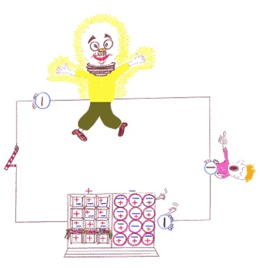Ein Erzeuger ist das, was den Strom fabriziert (генератор – это то, что производит электрический ток). Der Leiter ist das, was den Strom transportiert (проводник – это то, что проводит электрический ток), zum Beispiel ein Draht oder ein Kabel (например, провод или кабель). Als Letztes – der Verbraucher (последний – потребитель), das ist «derjenige», der den Strom aufbraucht (это тот, что расходует электрический ток), oder ihn braucht zum funktionieren (или использует его для работы) – eine Glühbirne zum Beispiel (электрическая лампочка, например).
Wenn du ein elektrisches Gerät benutzen möchtest (если тебе хочется использовать электрический прибор), dann musst du als erstes den Stromstecker in eine Steckdose stöpseln (прежде всего, конечно, ты должен вставить штепсельную вилку в розетку). Wenn du mit dem Gebrauch des Gerätes fertig bist (если же ты закончил использование прибора), solltest du den Apparat ausschalten (выключи его), und an manchen müssen wir auch den Stecker aus der Steckdose ziehen (а в некоторых приборах мы должны также вытащить штепсельную вилку из розетки). Damit dir nichts passieren wird (чтобы с тобой ничего не случилось), solltest du immer am Stecker selber ziehen (следует всегда тянуть держась за сам штепсель), und nicht an der Schnur, die daran ist (а не за шнур, отходящий от него). Denn sonst kann es mal passieren (иначе может получиться так), dass du diese abreißt (что ты разорвешь его (шнур), und das ist dann lebensgefährlich (и тогда это опасно для жизни), denn an den abgerissenen Drähten kann man dann leicht einen Stromschlag bekommen (так как из разорванных проводов очень легко получить электрический удар)!
Warum muss man eigentlich nicht die Steckdose in der Wand schließen (почему же нам не надо закупоривать розетку в стене), wenn kein Stecker drin ist (когда в ней нет никакой штепсельной вилки), und wir den Strom daraus nicht mehr brauchen (и мы не используем электричество из нее; daraus – из него, нее, них, отсюда)? Strom «weiß» immer, ob er gebraucht wird oder nicht (электрический ток всегда «знает», будет ли он использован или нет). Wenn Leiter und Verbraucher nicht angeschlossen sind, dann kommt auch kein Strom aus der «Dose» (если проводник = шнур электроприбора и потребитель = сам прибор не подключены, тогда из розетки не выходит электричество). Wenn du deinen Finger in die Steckdose stecken würdest (если бы ты воткнул пальцы в розетку) – TUE ES NICHT (не делай этого)! – dann würden deine Finger zum Leiter und du selbst zum Verbraucher (тогда твои пальчики стали бы проводниками, а ты сам потребителем)… Was dann passieren würde – sicher nichts Gutes (что бы тогда могло произойти – точно уж ничего хорошего), also lass die Finger aus der Steckdose (так что оставь пальчики вне розетки = не втыкай их в розетку). Strom ist nicht so intelligent (электрический ток не настолько умен), dass er merken würde, dass du kein elektrisches Gerät bist (чтобы заметить, что ты – не электрический прибор).
Strom ist sehr schnell (электрический ток очень быстрый). Sofort nachdem du den Lichtschalter betätigt hast, ist er da (сразу же, как только ты нажал на включатель – он уже здесь; betätigen – приводить в действие, включать), und nachdem du schon wieder gedrückt hast (и после того как ты снова нажал), ist er schon weg (он сразу же исчезает).
Strom ist etwas sehr Nützliches in unserem Leben (электрический ток очень необходим в нашей жизни), damit kann man kochen, bohren, Licht machen und viele andere gute Dinge anstellen (для того, чтобы мы могли готовить, сверлить, включать свет и совершать многие другие замечательные дела). So wichtig ist Strom (так важно электричество)!
Wie es dir sicherlich bekannt ist, hat Strom mit Elektronen zu tun. Nehmen wir einmal an, im luftleeren Raum bewegen sich einige Elektronen, dann fließt entlang dieser Bahn elektrischer Strom (genau genommen reicht schon ein einzelnes Elektron).
Unter elektrischem Strom versteht man sich in eine bestimmte Richtung bewegende Elektronen.
In welche Richtung fließt eigentlich Strom? Wenn du dieses Buch von Anfang gelesen hast, weißt du schon, dass Elektronen es lieben dahin zu reisen, wo mehr freie Platz für sie ist.
Da müssen wir unterscheiden, denn es gibt eigentlich zwei Arten vom Strom, und die unterscheiden sich voneinander eben in Ihrer Richtung. Der so genannte Gleichstrom fließt vom Pluspol (+) einer Spannungsquelle zum Minuspol (-), während die den Strom verursachenden Elektronen verkehrt vom Minus- zum Pluspol fließen, weil da, wo Minus ist, sind viel Elektronen, und wo Plus ist, sind zu wenige – also viel Platz gibt – das kannst du im Bild mit der Lampe sehen. Beispiele dafür sind: Batterien, Akkumulatoren, Generatoren. Die zweite Art heißt Wechselstrom, und dieser kommt bei dir zu Hause aus der Steckdose. Wechselstrom hat eine solche Eigenschaft, dass die Elektronen sich immer hin und her bewegen, praktisch immer von einem Pol zum anderen und wieder zurück. Aus diesem Grund hat Wechselstrom auch keinen Plus oder Minus. Elektrischer Strom wird über den Leiter vom Erzeuger zum Verbraucher transportiert.
Lass uns dass mal ein wenig erklären.
Ein Erzeuger ist das, was den Strom fabriziert. Der Leiter ist das, was den Strom transportiert, zum Beispiel ein Draht oder ein Kabel. Als Letztes – der Verbraucher, das ist «derjenige», der den Strom aufbraucht, oder ihn braucht zum funktionieren.
Wenn du ein elektrisches Gerät benutzen möchtest, dann musst du als erstes den Stromstecker in eine Steckdose stöpseln. Wenn du mit dem Gebrauch des Gerätes fertig bist, solltest du den Apparat ausschalten, und an manchen müssen wir auch den Stecker aus der Steckdose ziehen. Damit dir nichts passieren wird, solltest du immer am Stecker selber ziehen, und nicht an der Schnur die daran ist. Denn sonst kann es mal passieren, dass du diese abreißt, und das ist dann lebensgefährlich, denn an den abgerissenen Drähten kann man dann leicht einen Stromschlag bekommen!
Warum muss man eigentlich nicht die Steckdose in der Wand schließen, wenn kein Stecker drin ist, und wir den Strom daraus nicht mehr brauchen? Strom «weiß» immer ob er gebraucht wird oder nicht. Wenn Leiter und Verbraucher nicht angeschlossen sind, dann kommt auch kein Strom aus der «Dose». Wenn du deinen Finger in die Steckdose stecken würdest - TUE ES NICHT! – dann würden deine Finger zum Leiter und du selbst zum Verbraucher… Was dann passieren würde – sicher nichts Gutes, also lass die Finger aus der Steckdose. Strom ist nicht so intelligent, dass er merken würde, dass du kein elektrisches Gerät bist.
Strom ist sehr schnell. Sofort nachdem du den Lichtschalter betätigt hast, ist er da, und nachdem du schon wieder gedrückt hast, ist er schon weg.
Strom ist etwas sehr Nützliches in unserem Leben, damit kann man kochen, bohren, licht machen und viele andere gute Dinge anstellen. So wichtig ist Strom!
Warum ist Feuer heiß?
(почему огонь горячий?)
Zuerst müssen wir uns mal klar machen (давай сначала выясним), was Feuer überhaupt ist (что же вообще такое огонь).
Feuer ist das Resultat einer chemischen Reaktion (огонь – результат химической реакции), welche unter anderem auch Hitze und Licht produziert (которая, кроме всего прочего, сопровождается выделением тепла и света: «производит также жар и свет»).
Nehmen wir mal ein gutes Beispiel dafür: Reaktion zwischen Sauerstoff und Brennstoff (для этого давай рассмотрим один хороший пример: реакцию между кислородом и топливом; brennen – гореть; der Stoff – материал). Wir brauchen allerdings auch etwas um die chemische Reaktion zu stimulieren (конечно, нам необходимо иметь также кое-что, что поможет начать химическую реакцию; stimulieren – побуждать, стимулировать). Warum brennt eigentlich Feuer in unserem Kamin (почему, собственно, горит огонь в нашем камине)? Hast du je darüber nachgedacht (задумывался ли ты когда-нибудь об этом; je – когда-нибудь, когда-либо)? Weil wir in unserem Kamin drei wichtige Komponenten auf einmal haben: Sauerstoff (O2), Holz – als Brennstoff, und Wärme (потому что = все дело в том, что в нашем камине присутствуют все три необходимых компонента: кислород (O2), древесина – в качестве топлива, и тепло). Also, wie entsteht nun das Feuer im Kamin (итак, как же возникает огонь в камине)? Na klar (ну, ясное дело)! Lass uns ein Streichholz dafür nehmen – aber bitte nur unter Aufsicht eines Erwachsenen (давай возьмем для этого спичку – но, пожалуйста, только под контролем взрослого).
Wenn Holz heiß genug wird, reagiert das Sauerstoff (O2) mit dem Holz, und das Holz fängt an zu brennen (когда древесина достаточно разогреется, кислород вступит с ней в реакцию, и она загорится: «начинает гореть»). Zu jedem Brennstoff gibt es eine bestimmte Temperatur (для каждого топлива существует своя определенная температура), bei dem er sich entzündet (при которой оно начинает гореть). Für das Holz im Kamin ist das eine, für das Gas im Herd eine andere (для древесины в камине – одна, для газа в плите – другая).
Weißt du, dass verrostendes Eisen (знаешь ли ты, что ржавеющее железо), auch in einem Verbrennungsprozess ist (тоже находится в процессе горения)? Ja, wirklich, gleicher Vorgang wie bei deinem Holz im Kamin (да, на самом деле, как твое полено в камине), nur viel langsamer (только гораздо медленнее), so dass wir die Hitze nicht spüren können (так что выделяемое при этом тепло невозможно прочувствовать).
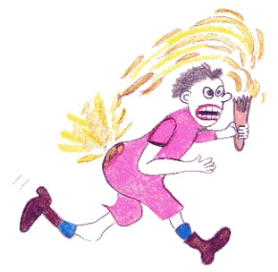Zuerst müssen wir uns mal klar machen, was Feuer überhaupt ist.
Feuer ist das Resultat einer chemischen Reaktion, welche unter anderem auch Hitze und Licht produziert.
Nehmen wir mal ein gutes Beispiel dafür: Reaktion zwischen Sauerstoff und Brennstoff. Wir brauchen allerdings auch etwas um die chemische Reaktion zu stimulieren. Warum brennt eigentlich Feuer in unserem Kamin? Hast du je darüber nachgedacht? Weil wir in unserem Kamin drei wichtige Komponenten auf einmal haben: Sauerstoff (O2), Holz – als Brennstoff, und Wärme. Also, wie entsteht nun das Feuer im Kamin? Na klar! Lass uns ein Streichholz dafür nehmen – aber bitte nur unter Aufsicht eines Erwachsenen.
Wenn Holz heiß genug wird, reagiert das Sauerstoff (O2) mit dem Holz, und das Holz fängt an zu brennen. Zu jedem Brennstoff gibt es eine bestimmte Temperatur, bei dem er sich entzündet. Für das Holz im Kamin ist das eine, für das Gas im Herd eine andere. Weißt du, dass verrostendes Eisen auch in einem Verbrennungsprozess ist? Ja, wirklich, gleicher Vorgang wie bei deinem Holz im Kamin, nur viel langsamer, so dass wir die Hitze nicht spüren können.
Was ist Wasser?
(что такое вода?)
Der Blaue Planet wird die Erde nicht umsonst genannt (земля неспроста называется голубой планетой). Den berechtigten Namen hat sie bekommen, weil über 70 % ihrer Oberfläche mit Wasser bedeckt ist (это справедливое имя она получила, так как более чем 70 % ее поверхности покрыто водой) – einschließlich Seen, Flüsse, Meere, Ozeane, Eis und Wasserdampf in der Luft (включая озера, реки, моря, океаны, лед и водяной пар в воздухе). Auch wir selbst sind größtenteils Wasser (мы сами тоже большей частью состоим из воды). Meistens ist Wasser eine Flüssigkeit (чаще всего вода находится в жидком состоянии; die Flüssigkeit – жидкость), die weder Geschmack noch Farbe, noch Aroma hat (не имеющая ни вкуса, ни цвета, ни аромата). Nur Meerwasser schmeckt salzig (только морская вода имеет соленый вкус).
Das Wasser auf der Erde ist immer in Bewegung (вода на земле находится все время в движении).
Wasser kann sich in Wasserdampf oder in Eis verwandeln (вода может превращаться в водяной пар или лед). Das hängt von der Temperatur ab (это зависит от температуры).
Die Aufgaben des Wassers sind vielfältig (назначение воды многообразно: «задачи воды многообразны»): Es transportiert Nährstoffe zu jeder einzelner Zelle (она транспортирует питательные вещества в каждую единичную клеточку) und schwemmt Schadstoffe aus (и вымывает вредные вещества). Wasser dient als Schmiermittel für Gelenke und Augen (вода служит смазочным материалом для суставов и глаз) und spielt eine wesentliche Rolle bei der Regulierung der Körpertemperatur (и играет важную роль для регуляции температуры тела). Also ist Wasser für uns alle genau so wichtig wie die Luft zum Atmen (итак, вода для нас всех точно также важна, как и воздух для дыхания).
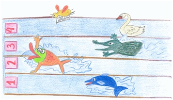Der Blaue Planet wird die Erde nicht umsonst genannt. Den berechtigten Namen hat sie bekommen, weil über 70 % ihrer Oberfläche mit Wasser bedeckt sind – einschließlich Seen, Flüsse, Meere, Ozeane, Eis und Wasserdampf in der Luft. Auch wir selbst sind größtenteils Wasser. Meistens ist Wasser eine Flüssigkeit, die weder Geschmack noch Farbe, noch Aroma hat. Nur Meerwasser schmeckt salzig.
Das Wasser auf der Erde ist immer in Bewegung.
Wasser kann sich in Wasserdampf oder in Eis verwandeln. Das hängt von der Temperatur ab.
Die Aufgaben des Wassers sind vielfältig: es transportiert Nährstoffe zu jeder einzelner Zelle und schwemmt Schadstoffe aus. Wasser dient als Schmiermittel für Gelenke und Augen und spielt eine wesentliche Rolle bei der Regulierung der Körpertemperatur. Also ist Wasser für uns alle genau so wichtig wie die Luft zum Atmen.
Von wo kommt das Wasser auf unserer Erde?
(откуда пришла вода на нашу Землю?)
Ohne Wasser wäre die Erde tot (без воды земля бы умерла). Durch Wasser wurde das Leben auf der Erde überhaupt erst möglich (лишь благодаря воде стала вообще возможна жизнь на земле).
Unser Sonnensystem hat sich vor 4.6 Milliarden Jahren aus heißem Solarnebel gebildet (наша Солнечная система образовалась около 4,6 млрд. лет назад из космической пыли). Wie konnte das passieren (как это могло произойти)?
Der Baustoff unserer Erde liegt zu dieser Zeit noch ganz unordentlich (строительный материал нашей земли лежал в то время еще совершенно беспорядочно), so wie aus einer Nebelwolke gefallene Staubkörner (как упавшие из завесы пыли крупинки; herum – указывает на движение без определенного направления). Die Sternenstaubpartikel verklebten nach und nach (крупинки пыли от звезд постепенно склеивались), und werden zu riesigen Brocken (и превращались в огромные глыбы; der Brocken – кусок; обломок; глыба). Auf der zusammengeklebten Masse aus Staub (из слипшихся вместе кусочков пыли) haben einige Gase aufgestiegen (поднимались некоторые газы), genau so (точно так же), wie aus einem frisch gebackenen Kuchen der Geruch aufsteigt (как из свежеиспеченного пирога поднимается /в воздух/ запах).
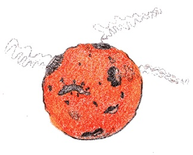Zwischen diesen Gasen waren dazumal auch Wassermoleküle (среди этих газов были в то время также и молекулы воды). Sie waren so lange in Gasform am Reisen (они так долго путешествовали в газовой форме), bis unsere Erde genug abgekühlt war (пока наша земля не остыла достаточно), und aus der Atmosphäre schließlich der erste Regentropfen auf unseren damals noch heißen Planeten fiel (и из атмосферы на нашу еще горячую планету наконец-то не выпали первые капельки дождя).
Es dauerte viele Millionen Jahre (прошло много миллионов лет), bis unsere kleine Erde so geworden ist, wie sie heute ist (пока наша маленькая земля стала такой, какой она является сегодня).
Ohne Wasser wäre die Erde tot. Durch Wasser wurde das Leben auf der Erde überhaupt erst möglich.
Unser Sonnensystem hat sich vor 4.6 Milliarden Jahren aus heißem Solarnebel gebildet. Wie konnte das passieren?
Der Baustoff unserer Erde liegt zu dieser Zeit noch ganz unordentlich, so wie aus einer Nebelwolke gefallene Staubkörner. Die Sternenstaubpartikel verklebten nach und nach, und werden zu riesigen Brocken. Auf der zusammengeklebten Masse aus Staub haben einige Gase aufgestiegen, genau so, wie aus einem frisch gebackenen Kuchen der Geruch aufsteigt.
Zwischen diesen Gasen waren dazumal auch Wassermoleküle. Sie waren so lange in Gasform am Reisen, bis unsere Erde genug abgekühlt war, und aus der Atmosphäre schließlich der erste Regentropfen auf unseren damals noch heißen Planeten fiel.
Es dauerte viele Millionen Jahre, bis unsere kleine Erde so geworden ist, wie sie heute ist.
Was ist ein Diamant?
(Что такое бриллиант?)
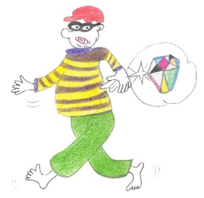Hast du noch nicht vergessen (ты еще не забыл), woher das Wasser auf unserem Planeten kommt (откуда появилась на нашей планете вода; kommen – приходить, прибывать, поступать)? Ja, sicher (ну конечно; дословно: да, конечно), vor sehr langer Zeit (давным-давно), als die Erde angefangen hat sich allmählich abzukühlen (когда Земля стала постепенно остывать; anfangen – начинать; allmählich – постепенно), haben in ihrem Inneren immer noch die verschmolzenen Substanzen geschwommen (внутри ее недр все еще плавали расплавленные вещества; immer noch – все еще, schwimmen – плавать, verschmelzen – плавить, выплавлять; сплавлять). Moleküle von Kohlenstoff ( молекулы углерода), die unter den extrem heißen Temperaturen und hohen Druck waren (находившиеся под влиянием очень высоких температур и высокого давления), haben sich zusammengepresst und vieleckige Kristalle – Diamanten – geformt (спрессовались и сформировали многоугольные кристаллы – алмазы; pressen – сжимать, прессовать; formen – принимать форму).
Ein Diamant ist ein Wunder der Natur (алмаз является чудом природы). Wenn ein Diamant gefunden wird (когда алмаз находят = найденный в природе алмаз), sieht er nicht so aus (он совсем не похож на), wie du ihn im Geschäft siehst (тот, что ты видишь в магазине; sehen – видеть). Ein Diamant wird nur dank gewandten Händen von Menschen so schön (алмаз становится только благодаря умелым рукам человека столь красивым). Genau genommen (если быть точными), ist das was du im Geschäft siehst (то, что ты видишь в магазине), ein bearbeiteter Diamant (это обработанный алмаз; bearbeiten – обрабатывать), und den nennt man Brilliant (и он называется бриллиантом). Jeder Brilliant hat 58 und mehr Seiten (каждый бриллиант имеет по 58 и более граней). Er kann besser als alle anderen Kristalle Licht brechen und reflektieren (он способен лучше, по сравнению с другими кристаллами, преломлять и отражать свет). Aus diesem Grund leuchtet und funkelt ein Brilliant so schön (по этой причине = поэтому бриллиант светится и сверкает так красиво; leuchten – светить; светиться, сиять, блестеть; funkeln – сверкать, искриться) mit allen möglichen Farben (со всеми возможными цветами = переливаясь всеми цветами радуги).
In einem Diamant ist jedes Atom mit vier anderen Atomen verbunden (в каждом бриллианте каждый атом связан с другими четырьмя атомами; verbinden – связывать, соединять), so wie im Bild (как на картинке).
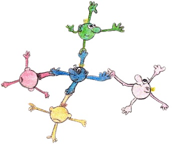Diamanten sind übrigens (бриллианты являются, кстати) auch die festeste Schöpfung der Natur (к тому же наиболее прочным творением природы), und werden darum auch sehr oft in der Industrie benutzt (и поэтому также очень часто используются в промышленности; benutzen – использовать).
Hast du noch nicht vergessen, woher das Wasser auf unserem Planeten kommt? Ja, sicher, dass vor sehr langer Zeit, als die Erde angefangen hat sich allmählich abzukühlen, haben in ihrem Inneren immer noch die verschmolzenen Substanzen geschwommen. Moleküle von Kohlenstoff, die unter den extrem heißen Temperaturen und hohen Druck waren, haben sich zusammen gepresst und vieleckige Kristalle – Diamanten – geformt.
Ein Diamant ist ein Wunder der Natur. Wenn ein Diamant gefunden wird, sieht er nicht so aus, wie du ihn im Geschäft siehst. Ein Diamant wird nur dank gewandten Händen von Menschen so schön. Genau genommen, ist das was du im Geschäft siehst, ein bearbeiteter Diamant, und den nennt man Brilliant. Jeder Brilliant hat 58 und mehr Seiten. Er kann besser als alle anderen Kristalle Licht brechen und reflektieren. Aus diesem Grund leuchtet und funkelt ein Brilliant so schön mit allen möglichen Farben.
In einem Diamant ist jedes Atom mit vier anderen Atomen verbunden, so wie im Bild.
Diamanten sind übrigens auch die festeste Schöpfung der Natur, und werden darum auch sehr oft in der Industrie benutzt.
Was ist Feuerwerk?
(что такое фейерверк?)
Weißt Du, dass schon vor tausend Jahren die Menschen mit großer Bewunderung sich die überraschenden Farben von Feuerwerken angesehen haben (знаешь ли ты, что уже тысячелетия люди с восхищением рассматривают удивительные цвета огней фейерверка; die Bewunderung – восхищение, восторг; sich etwas ansehen – смотреть на что-либо, рассматривать)?
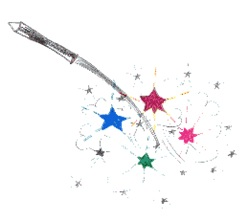Die ersten Feuerwerke entstanden in China (первые фейерверки возникли в Китае). Damals waren allerdings die Feuerwerke nicht wie die modernen heutigen (в то время, однако, фейерверки значительно отличались от современных).
Nur mit der Erfindung des Schießpulver und der Chemie ist es möglich geworden, schöne Farben und Formen am Himmel darzustellen (только с изобретением пороха и с развитием химии фейерверки стало возможным представлять красивые цветы и формы на небе).
Schon seit mehr als 200 Jahren überraschen uns Feuerwerker, die für uns verschiedene Bilder in den Himmel zaubern – Blumen, geometrische Figuren und viele andere tolle Darstellungen (уже более 200 лет удивляют нас создатели фейерверков, которые для нас волшебным образом вызывают в небо различные картины – цветы, геометрические фигуры и многие другие удивительные изображения; zaubern – колдовать, добиваться волшебством; волшебством переносить).
Mann macht Feuerwerke mit Salpeter, Schwefel und Kohle (фейерверки создаются с помощью селитры, серы и угля). Alle diese Substanzen werden in Pulverform fabriziert und danach mit verschiedenen Salzen gemischt (все эти вещества производятся в виде порошка, а затем смешиваются с различными солями).
Was «färbt» das Feuerwerk mit so vielen verschiedenen Farben (что же окрашивает фейерверк столькими различными цветами)? Das ist sehr einfach (очень просто): man mischt noch andere Chemikalien zu Salpeter, Schwefel und Kohle (к селитре, сере и углю добавляются также другие химические вещества), wie zum Beispiel färbt Barium das Feuerwerk grün, Strontium rot, Natrium gelb, Kupfer dunkelblau (как, например, барий придает огням зеленый цвет, стронций – красный, натрий – желтый, медь – темно-синий). Mit der Zugabe von Eisen komponenten können wir die Wirkung von einem silbernen Regen erzielen (c помощью железных наполнителей нам удается достичь эффект серебряного дождя; erzielen – достигать).
Also wenn du schöne Feuerwerke selber herstellen willst, musst du Chemie und Physik studieren (так что если тебе самому хочется создавать фейерверки – придется изучать химию и физику)! Das sind sehr faszinierende Wissenschaften (эти науки очень увлекательные; faszinieren – околдовывать; очаровывать; привлекать).

Weißt Du, dass schon vor tausend Jahren die Menschen mit großer Bewunderung sich die überraschenden Farben von Feuerwerken angesehen haben?
Die ersten Feuerwerke entstanden in China. Damals waren allerdings die Feuerwerke nicht wie die modernen heutigen.
Nur mit der Erfindung des Schießpulver und der Chemie ist es möglich geworden, schöne Farben und Formen am Himmel darzustellen.
Schon seit mehr als 200 Jahren überraschen uns Feuerwerker, die für uns verschiedene Bilder in den Himmel zaubern – Blumen, geometrische Figuren und viele andere tolle Darstellungen.
Mann macht Feuerwerke mit Salpeter, Schwefel und Kohle. Alle diese Substanzen werden in Pulverform fabriziert und danach mit verschiedenen Salzen gemischt.
Was «färbt» das Feuerwerk mit so vielen verschiedenen Farben? Das ist sehr einfach: man mischt noch andere Chemikalien zu Salpeter, Schwefel und Kohle, wie zum Beispiel färbt Barium das Feuerwerk grün, Strontium rot, Natrium gelb, Kupfer dunkelblau. Mit der Zugabe von Eisen komponenten können wir die Wirkung von einem silbernen Regen erzielen.
Also wenn du schöne Feuerwerke selber herstellen willst, musst du Chemie und Physik studieren. Das sind sehr faszinierende Wissenschaften.
Warum ist das Meer salzig?
(почему море соленое?)
Wer hat wohl das Salz ins Meer geschüttet (кто же насыпал соль в море; schütten – сыпать; насыпать; высыпать; wohl – пожалуй, вероятно, может быть), und warum ist nicht ein Fluss gesalzen, das Meer aber doch (и почему не река соленая, а море)?
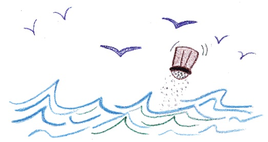Alle Flüsse auf unserer Erde enden irgendwann im Meer (все реки на нашей земле когда-нибудь заканчиваются = заканчивают свой путь у моря). Das Wasser macht eine lange Reise, bis es im Meer angekommen ist (вода проделывает длинное путешествие до своего прибытия к морю).
Warum alle Flüsse im Meer enden (почему все реки заканчиваются в море)? Ganz einfach (очень просто)! Weil das Meer und die Ozeane immer niedriger liegen als das Land (потому что моря и океаны лежат = уровень морей и океанов всегда ниже уровня суши). Deshalb fließt jeder Fluss (поэтому течет каждая река) – auch wenn manchmal mit Umwegen (даже если иногда окольными путями = не напрямик) – ins Meer oder in die Ozeane (в море или океаны). Fantasieren wir ein bisschen: sie fließen zum Meer (давай пофантазируем вместе: они текут = тянутся к морю), und nehmen auf dem Weg dorthin kleine Stückchen Erde – sogenannte Mineralien – mit (и по пути туда берут с собой маленькие кусочки земли – так называемые минералы; mitnehmen – брать, уносить, захватывать с собой), dabei sind auch ganz kleine Stücke Salz (содержащие: «при этом есть» совсем маленькие кусочки соли), die in der Erde und unter der Erde liegen (которые лежат на земле и под землей). So nimmt zum Beispiel ein Fluss der hoch oben auf einem Berg anfängt (так, например река, рождающаяся высоко в горах, берет с собой; anfangen – начинать; зарождаться, истекать), von den Steinen kleine Stückchen Salz mit (маленькие кусочки соли из камней), und diese lösen sich dann ganz langsam auf dem langen Weg ins Meer auf (которые постепенно растворяются в дальнем пути к морю). Wenn die lange Reise des Wassers vom Fluss im Meer zu Ende ist (когда длинное путешествие воды из рек к морю подходит к концу), wird das Salz dort abgelegt (соль откладывается в нем = в его водах), und weil das schon so lange passiert, ist das Meer halt salzig geworden (и так как это происходит уже очень долго, море стало соленым; halt – уж; мол, бишь; значит /часто не переводится/). Als übrigens unsere Erde geboren wurde (кстати, когда родилась наша земля), war das Wasser der Meere und Ozeane vermutlich noch nicht salzig (вода морей и океанов, по всей вероятности, еще не была соленой; vermuten – предполагать).
Wer hat wohl das Salz ins Meer geschüttet, und warum ist nicht ein Fluss gesalzen, das Meer aber doch?
Alle Flüsse auf unserer Erde enden irgendwann im Meer. Dass Wasser macht eine lange Reise, bis es im Meer angekommen ist.
Warum alle Flüsse im Meer enden? Ganz einfach! Weil das Meer und die Ozeane immer niedriger liegen als das Land. Deshalb fließt jeder Fluss – auch wenn manchmal mit Umwegen – ins Meer oder in die Ozeane. Fantasieren wir ein bisschen: sie fließen zum Meer, und nehmen auf dem Weg dorthin kleine Stückchen Erde – sogenannte Mineralien – mit, dabei sind auch ganz kleine Stücke Salz, die in der Erde und unter der Erde liegen. So nimmt zum Beispiel ein Fluss der hoch oben auf einem Berg anfängt, von den Steinen kleine Stücke Salzen mit, und diese lösen sich dann ganz langsam auf dem langen Weg ins Meer auf. Wenn die lange Reise des Wassers vom Fluss im Meer zu Ende ist, wird das Salz dort abgelegt, und weil das schon so lange passiert, ist das Meer halt salzig geworden. Als übrigens unsere Erde geboren wurde, war das Wasser der Meere und Ozeane vermutlich noch nicht salzig.
Was ist Luft?
(что такое воздух?)
Was für Komponenten hat die Luft (из каких компонентов состоит воздух)? Ok! Es ist wohl allen klar, dass Luft gasförmig ist (правильно, мы все знаем, что воздух – это газ). Allerdings besteht Luft nicht nur aus einer Sorte Gas, aber aus einer Mischung aus verschiedenen Gasen (конечно, воздух состоит не только из одного вида газа, а из смеси различных газов). Der größte Teil der Luft besteht aus Stickstoff – N2 (большая часть воздуха состоит из азота – N2). Ein weiterer Teil der Luft ist Sauerstoff – O2 (еще одна часть воздуха – это кислород – O2), den alle lebenden Organismen zum Atmen brauchen (который нужен всем живым организмам для дыхания), also für den Lebensprozess (а значит, для жизни). Ein nächstes Gas ist das sogenannte Kohlendioxid – CO2 (следующий газ воздуха – это так называемый углекислый газ – CO2), das ist das, was im Glas sprudelt (это то, что бурлит в стакане; sprudeln - пениться, клокотать, бурлить, кипеть), wenn du ein Glas Mineralwasser ausgießt (когда ты заполняешь его минеральной водой; ausgießen – выливать; разливать, заполнять). Ein ganz kleiner Teil der Luft besteht aus Edelgasen (самая малая часть воздуха состоит из благородных газов), zum Beispiel Helium – He, der meistens benutzt wird um Luftballons zu füllen, damit diese fliegen können (например, гелия, который используется в большинстве случаев для заполнения воздушных баллонов, для того, чтобы они могли летать).
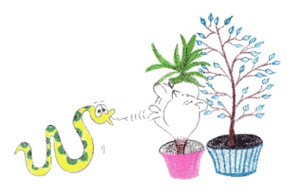Wir atmen ja bekanntlich Luft ein und aus (как известно, мы вдыхаем и выдыхаем воздух). Die verbrauchte Luft (использованный воздух), die wir ausatmen (который мы выдыхаем), wird von Pflanzen «eingeatmet» (aufgenommen), wieder in Sauerstoff umgewandelt und dann nach außen «ausgeatmet» (вбирают в себя растения и снова превращают в кислород = вырабатывают из него кислород и затем «выдыхают» наружу). Das ist alles, damit wir wieder saubere Luft atmen können (это все для того, чтобы мы снова могли дышать чистым воздухом).
Luft ist ein genau so wichtiges Element für unser Leben wie Wasser (воздух играет такую же важную роль в нашей жизни, как и вода). Sie umhüllt unsere Erde und bildet die Atmosphäre (он окутывает нашу землю и создает атмосферу; umhüllen – закутывать, завертывать, окутывать).
Sie schützt unsere Erde von den heißen Strahlen der Sonne (он защищает нашу землю от горячих лучей солнца). Ohne Luft währe uns tagsüber schrecklich heiß, und nachts würde es unerträglich kalt (без воздуха было бы очень жарко днем и невыносимо холодно ночью). So wichtig ist die Luft (вот как важен воздух)!
Luft triffst du überall (ты можешь встретить воздух повсюду), in der Atmosphäre, im Wasser und sogar tief in der Erde (в атмосфере, в воде и даже глубоко в самой земле). Überall um uns herum ist Luft (повсюду вокруг нас воздух). du kannst sie zum Beispiel bei Wind auf deiner Backe spüren (ты можешь почувствовать его, например, при ветре = ветреной погоде на своей щеке).
Was für Komponenten hat die Luft? Ok! Es ist wohl allen klar, dass Luft Gasförmig ist. Allerdings besteht Luft nicht nur aus einer Sorte Gas, aber aus einer Mischung aus verschiedenen Gasen. Der größte Teil der Luft besteht aus Stickstoff (N2). Ein weiterer Teil der Luft ist Sauerstoff (O2), den alle lebenden Organismen zum Atmen brauchen, also für den Lebensprozess. Ein nextes Gas ist das sogenannte Kohlendioxid (CO2), das ist das, was im Glas sprudelt, wenn du ein Glas Mineralwasser ausgießt. Ein ganz kleiner Teil der Luft besteht aus Edelgasen, zum Beispiel Helium (He), der meistens benutzt wird um Luftballons zu füllen, damit diese fliegen können.
Wir atmen ja bekanntlich Luft ein und aus. Die verbrauchte Luft, die wir ausatmen, wird von Pflanzen «eingeatmet» (aufgenommen), wieder in Sauerstoff umgewandelt und dann nach außen «ausgeatmet». Dass ist alles, damit wir wieder saubere Luft atmen können!
Luft ist ein genau so wichtiges Element für unser Leben wie Wasser. Sie umhüllt unsere Erde und bildet die Atmosphäre.
Sie schützt unsere Erde von den heißen Strahlen der Sonne. Ohne Luft währe uns tagsüber schrecklich heiß, und nachts würde es unerträglich kalt. So wichtig ist die Luft!
Luft triffst du überall, in der Atmosphäre, im Wasser und sogar tief in der Erde. Überall um uns herum ist Luft. Du kannst sie zum Beispiel bei Wind auf deiner Backe spüren.
Warum gibt es Wind?
(отчего бывает ветер?)
Wenn du jetzt antwortest, dass Jemand auf die Erde bläst… (если ты ответишь, что кто-то дует на землю…) dann ist das die falsche Antwort (тогда это неправильный ответ). Warum bläst der Wind (почему дует ветер)? Stellen wir uns mal vor (давай представим себе): аm stärksten wird die Erde am Äquator erwärmt, am geringsten an den Polen (наиболее сильно земля нагревается на экваторе, меньше же всего – на полюсах). Die warmen Luftmassen (große Mengen Luft) am Äquator steigen auf und erzeugen damit ein Tiefdruckgebiet (теплые воздушные массы /большое количество воздуха/ на экваторе поднимаются ввысь и этим создают область низкого давления; erzeugen – порождать, создавать, вызывать). Aufgestiegene warme Luft fängt an sich in verschiedene Richtungen zu bewegen (поднявшийся теплый воздух начинает двигаться в различных направлениях). Diese kühlt auf dem Weg in kältere Regionen, zum Beispiel den Polen, ab, und sinkt auf die Erdoberfläche zurück (эта = он /воздух/ охлаждается по пути к более холодным землям, например, к полюсам, и опускается назад на земную поверхность; diese – эта /в немецком языке ‘воздух’ – женского рода/; die Erdoberfläche – земная поверхность). Dann passiert Folgendes (затем происходит следующее): im genau gleichen Augenblick steigen in mehreren warmen Ländern mehr Luftmassen auf als dass sie absinken (в один и тот же момент в различных теплых странах большее количество воздуха поднимается наверх, чем опускается вниз). Dies bedeutet aber, dass dadurch größere Gebiete mit niedrigem Luftdruck in diesen Regionen entstehen (это означает, что на этих землях появляется большее количество территорий с низким давлением воздуха; entstehen – возникать; происходить). Dort, wo es kälter ist und der Prozess umgekehrt abläuft, erscheinen Hochdruckgebiete (там, где более холодно и процесс передвижения воздуха протекает наоборот, возникают территории с высоким давлением; ablaufen – происходить, развертываться, протекать /особытиях/). Durch dieses Auf- und Absteigen der Luftmassen entsteht Wind (в результате этого поднятия и опускания воздушных масс возникает ветер). Er «bläst» immer zwischen zwei Regionen mit unterschiedlichem Luftdruck (он дует всегда между двумя территориями с различным давлением воздуха). Die Richtung ist auch vorgegeben: vom Ort des höheren Luftdrucks zu dem des niedrigeren (направление ветра тоже определено: от места с более высоким к месту с более низким давлением воздуха). Hast du schon mal was von Twister oder Tornados gehört (слышал ли ты уже о Твистере или Торнадо)? Das sind auch Winde, nur sehr starke und gefährliche (они тоже являются ветрами, только очень сильными и опасными).
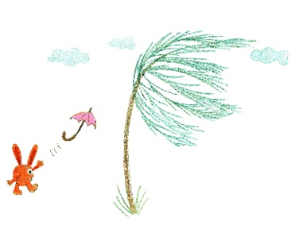Luft können wir nicht sehen, sie ist transparent, unsichtbar, aber wir können sie spüren und merken wenn sie in Bewegung kommt und zu Wind wird (мы не можем видеть воздух, он прозрачный, невидимый, но почувствовать и заметить его мы можем лишь тогда, когда он приходит в движение – становится ветром). Wir sehen zum Beispiel wenn Staub an der Straße entlang wirbelt, wir sehen Blätter unter unseren Füssen weg fliegen, die Haare bewegen sich (мы видим, как пыль кружится по дороге, листва летит из под ног прочь, волосы на голове шевелятся …).
Wenn du jetzt antwortest, dass Jemand auf die Erde bläst… dann ist das die falsche Antwort. Warum bläst der Wind? Stellen wir uns mal vor: аm stärksten wird die Erde am Äquator erwärmt, am geringsten an den Polen. Die warmen Luftmassen (große Mengen Luft) am Äquator steigen auf und erzeugen damit ein Tiefdruckgebiet. Aufgestiegene warme Luft fängt an sich in verschiedene Richtungen zu bewegen. Diese kühlt auf dem Weg in kältere Regionen, zum Beispiel den Polen, ab, und sinkt auf die Erdoberfläche zurück. Dann passiert Folgendes: im genau gleichen Augenblick steigen in mehreren warmen Ländern mehr Luftmassen auf als dass sie absinken. Dies bedeutet aber, dass dadurch größere Gebiete mit niedrigem Luftdruck in diesen Regionen entstehen. Dort wo es kälter ist und der Prozess umgekehrt abläuft, erscheinen Hochdruckgebiete. Durch dieses Auf- und Absteigen der Luftmassen entsteht Wind. Er «bläst» immer zwischen zwei Regionen mit unterschiedlichem Luftdruck. Die Richtung ist auch vorgegeben: vom Ort des höheren Luftdrucks zu dem des niedrigeren. Hast du schon mal was von Twister oder Tornados gehört? Das sind auch Winde, nur sehr starke und gefährliche.
Luft können wir nicht sehen, sie ist transparent, unsichtbar, aber wir können sie spüren und merken wenn sie in Bewegung kommt und zu Wind wird. Wir sehen zum Beispiel wenn Staub an der Straße entlang wirbelt, wir sehen Blätter unter unseren Füssen weg fliegen, die Haare bewegen sich …
Warum gibt es Regen?
(почему существует дождик?)
Wie wird der Regen gemacht (как появляется: «делается» дождик)? Es stellt sich heraus, dass die Sonne ist schuld am Regen (оказывается, солнышко «виновато» в дождике = в том, что существует дождик). Weil die Sonne das Wasser in den Ozeanen, Meeren, in den Flüssen und sogar in irgendeiner Pfütze aufheizt (потому что солнце прогревает воду в океанах, в морях, в реках, и даже в какой-нибудь луже), werden die Wassertröpfchen in transparenten Dampf verwandelt und steigen nach oben (капельки воды испаряются, превращаются в прозрачный пар и поднимаются кверху), zusammen mit warmer Luft (вместе с теплыми потоками воздуха) (das ist auch das Werk der Sonne (это тоже работа солнца)). Das machen sie, weil warme Luft leichter ist als kalte (ведь теплый воздух легче холодного), darum will diese immer nach oben reisen (поэтому он всегда путешествует = передвигается вверх).
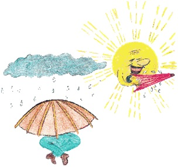Die Luft kühlt sich um einen Grad Celsius pro 100 Höhenmeter ab (воздух остывает на один градус Цельсия °C каждые 100 метров подъема в высоту). Sobald eine Luftfeuchtigkeit von 100 Prozent erreicht ist (как только влажность воздуха достигает 100 %), kühlt sich die Luft nur noch um ungefähr 0,6 °C pro 100 Meter ab (воздух остывает только приблизительно на 0,6 °C каждые 100 метров подъема в высоту).
Ganz weit oben ist es sehr kalt (совсем высоко очень холодно), wie im tiefsten Winter am Nordpol (как при глубочайшей зиме на Северном полюсе). Dampf ist warm (водяной пар теплый), und wenn er kalte Luft berührt (и когда он соприкасается с холодным воздухом), dann werden die winzigen Wassertropfen, aus denen der Dampf besteht, wieder in Wasser umgewandelt (тогда крошечные капельки воды, из которых состоит пар, снова превращаются в воду).
Diese winzigen Tröpfchen sind so leicht wie Federn (эти крохотные капельки cтоль же легки, как пух: «как перья»), so können sie ganz leicht in der Luft bleiben und reisen (поэтому они легко удерживаются и путешествуют в воздухе) und werden dabei immer etwas weiter nach oben geschoben (и при этом все время немного передвигаются: «передвигаемы» дальше наверх), durch immer neue warme Luft mit neuen Tröpfchen von unten nach oben gedrückt (подталкиваемые снизу наверх все новым и новым потоком теплого воздуха с новыми капельками; durch – через, сквозь; благодаря).
Weil aber kalte Luft auch immer in Bewegung ist (поскольку, однако, холодный воздух находится все время в движении), schleppt sie Tröpfchen nach unten (он прихватывает: «тащит» капельки вниз). Dann durch neue warme Luft wieder nach oben, und wieder nach unten (затем посредством нового теплого воздушного потока снова наверх, и снова вниз). Viele Tröpfchen auf einem Haufen, bilden dann zusammen eine Wolke (очень-очень много капелек в одной куче вместе образуют облако). Am oberen Ende der Wolke frieren sie, weil es oben so kalt ist (nicht vergessen) (в верхней части облака они замерзают – так как наверху очень холодно (не забывай))! So werden aus winzig kleinen Wassertropfen winzig kleine Eisstückchen (так становятся крошечные капельки воды крошечными кусочками льда). Diese Eisstückchen sind aber zu schwer, um sich frei in der Luft zu halten, also fallen sie runter (льдинки, однако, слишком тяжелы для того, чтобы держаться в воздухе, поэтому они и падают вниз). Auf dem Weg nach unten frieren sie mit anderen Eisstücken zusammen (по пути вниз они смерзаются с другими льдинками), und werden größer (и становятся крупнее). Da es aber weiter unten wärmer und wärmer wird (однако, поскольку по пути вниз становится теплее и теплее), tauen die Eisstückchen wieder auf (льдинки снова тают) und werden zu Wasser (и превращаются в воду), aber weil sie ja jetzt größer sind als vorher (но так как они ведь теперь больше, чем раньше) – sie sind ja mit anderen zusammen gefroren (они ведь смерзлись с другими) – können sie sich nicht mehr in der Luft halten (они не могут больше держаться в воздухе), und fallen nach unten (и падают вниз). Sie kommen zusammen als Regen auf die Erde (и они приходят вместе в виде дождика на землю).
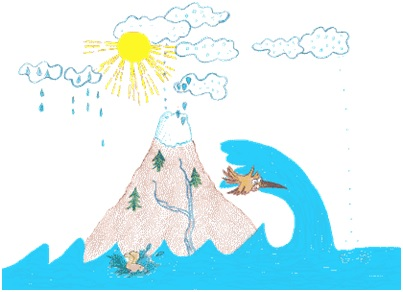Falls hatten es die Eisstückchen zu eilig auf die Erde zu kommen (в случае, если кусочки льда слишком торопятся прийти на землю; falls – в случае, если), weil sie zu groß geworden sind (так как они стали слишком большими), oder sie haben nicht die Möglichkeit aufzutauen gehabt (или не имели возможности растаять), weil es unterwegs zu kalt war (так как во время их пути /на землю/ было слишком холодно), das ist Hagel (тогда это град).
Regen wäscht die Luft aus (дождик промывает воздух). Neben dem Staub löst er auch Sauerstoff, Stickstoff, Kohlensäure, Schwefelsäure (помимо пыли, дождь растворяет кислород, азот, углекислоту, серную кислоту). Diese können so hoch konzentriert sein (они могут иметь такую высокую концентрацию), dass der Regen sich färbt, zum Beispiel, gelber Schwefelregen (что дождик окрашивается, например, желтый серный дождь). So wichtig ist der Regen (так важен дождик)!
Wie wird der Regen gemacht? Es stellt sich heraus, dass die Sonne ist schuld am Regen. Weil die Sonne das Wasser in den Ozeanen, Meeren, in den Flüssen und sogar in irgendeiner Pfütze aufheizt, werden die Wassertröpfchen in transparenten Dampf verwandelt und steigen nach oben, zusammen mit warmer Luft (das ist auch das Werk der Sonne). Das machen sie, weil warme Luft leichter ist als kalte, darum will diese immer nach oben reisen.
Die Luft kühlt sich um einen Grad Celsius pro 100 Höhenmeter ab. Sobald eine Luftfeuchtigkeit von 100 Prozent erreicht ist, kühlt sich die Luft nur noch um ungefähr 0,6 °C pro 100 Meter ab.
Ganz weit oben ist es sehr kalt, wie im tiefsten Winter am Nordpol. Dampf ist warm, und wenn er kalte Luft berührt, dann werden die winzigen Wassertropfen, aus denen der Dampf besteht, wieder in Wasser umgewandelt.
Diese winzigen Tröpfchen sind so leicht wie Federn, so können sie ganz leicht in der Luft bleiben und reisen und werden dabei immer etwas weiter nach oben geschoben, durch immer neue warme Luft mit neuen Tröpfchen von unten nach oben gedrückt.
Weil aber kalte Luft auch immer in Bewegung ist, schleppt sie Tröpfchen nach unten. Dann durch neue warme Luft wieder nach oben, und wieder nach unten. Viele Tröpfchen auf einem Haufen bilden dann zusammen eine Wolke. Am oberen Ende der Wolke frieren sie, weil es oben so kalt ist (nicht vergessen)! So werden aus winzig kleinen Wassertropfen winzig kleine Eisstückchen. Diese Eisstückchen sind aber zu schwer, um sich frei in der Luft zu halten, also fallen sie runter. Auf dem Weg nach unten frieren sie mit anderen Eisstücken zusammen, und werden größer. Da es aber weiter unten wärmer und wärmer wird, tauen die Eisstückchen wieder auf, und werden zu Wasser, aber weil sie ja jetzt größer sind als vorher – sie sind ja mit anderen zusammen gefroren – können sie sich nicht mehr in der Luft halten, und fallen nach unten. Sie kommen zusammen als Regen auf die Erde.
Falls hatten es die Eisstückchen zu eilig auf die Erde zu kommen, weil sie zu groß geworden sind, oder sie haben nicht die Möglichkeit auf zu tauen gehabt, weil es unterwegs zu kalt war, das ist Hagel.
Regen wäscht die Luft aus. Neben dem Staub löst er auch Sauerstoff, Stickstoff, Kohlensäure, Schwefelsäure. Diese können so hoch konzentriert sein, dass der Regen sich färbt, zum Beispiel, gelber Schwefelregen. So wichtig ist der Regen!
Warum gibt es Nebel?
(почему бывают туманы?)
Es sieht aus wie tief nach unten abgestiegene Wolken oder wie Flaum, der unsere kleine Erde umwickelt (кажется, будто низко-низко опустившиеся облака или пух окутали нашу маленькую землю).
Aber das ist keine Fantasie oder Einbildung, es ist so (но это не фантазия или воображение, так оно и есть)! Wolken im Himmel und Nebel haben große Ähnlichkeit (облака в небе и туман имеют большую схожесть = очень похожи): sie bestehen aus winzig kleinen Wassertröpfchen (они состоят из крохотных капелек воды). Wie die kleinen Wassertröpfchen zum Himmel gereist sind, haben wir mit dir schon in einem anderen Kapitel diskutiert (как маленькие капельки воды путешествовали = прибыли на небо, мы уже обсудили с тобой в другой главе). Die Hauptsache ist (самое главное), dass diese Tröpfchen aus transparentem Wasserdampf gebildet werden (что эти капельки образуются из прозрачного водяного пара).
Wenn der Dampf in fließende Kaltluft fällt (когда этот пар попадает в поток холодного воздуха), erstarrt er und wird zu Wasser umgewandelt (он застывает, превращаясь в капельки воды; erstarren – закоченеть, застывать, затвердевать). Also, wenn kleine Tröpfchen schnell genug wären höher zu gehen, um kalte Luft weiter oben im Himmel zu treffen, würden sie Wolken bilden (итак, если маленькие капельки достаточно быстро забрались высоко, чтобы встретить в небе холодный воздух, они становятся облаками: «были бы достаточно быстрыми, чтобы пойти выше … образовали бы облака»), aber wenn sie die Kaltluft am Boden treffen, weil sie nicht steigen wollen (oder können), werden sie Nebel bilden (но если они встречаются с холодным воздухом у поверхности земли, так как они не хотят (или не могут) подниматься, то образуется: «они образуют» туман). So einfach ist das (вот как просто)!
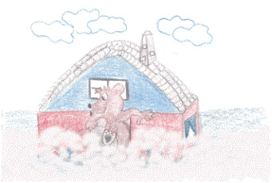Es sieht aus wie tief nach unten abgestiegene Wolken oder wie Flaum, der unsere kleine Erde umwickelt.
Aber das ist keine Fantasie oder Einbildung, es ist sо! Wolken im Himmel und Nebel haben große Ähnlichkeit: sie bestehen aus winzig kleinen Wassertröpfchen. Wie die kleinen Wassertröpfchen zum Himmel gereist sind, haben wir mit dir schon in einem anderen Kapitel diskutiert. Die Hauptsache ist, dass diese Tröpfchen aus transparentem Wasserdampf gebildet werden.
Wenn der Dampf in fließende Kaltluft fällt, erstarrt er und wird zu Wasser umgewandelt. Also, wenn kleine Tröpfchen schnell genug wären höher zu gehen, um kalte Luft weiter oben im Himmel zu treffen, würden sie Wolken bilden, aber wenn sie die Kaltluft am Boden treffen, weil sie nicht steigen wollen (oder können), werde sie Nebel bilden. So einfach ist das!
Warum gibt es Gewitter?
(почему бывает гроза?)
Ein Gewitter ist eines der wohl interessantesten Naturphänomene unseres Wetters (гроза, пожалуй, одно из интереснейших природных феноменов нашей погоды). du kennst die Vorzeichen von einem aufziehenden Gewitter ganz bestimmt (ты совершенно определенно = наверняка знаешь предзнаменования подтягивающейся грозы): schwarze, drohende Wolken und schwüle Luft (черные, угрожающие тучи и знойный воздух). Und dann beginnt auch schon das laute und tiefe Grollen (и тогда начинаются громкие и сильные раскаты грома; tief – глубокий; grollen – громыхать /о громе/).
Warum gibt es überhaupt Gewitter (почему вообще бывает гроза)? Was ist eigentlich ein Blitz (что же такое, собственно, молния)?
du weißt ja schon (ты ведь уже знаешь), dass eine Wolke aus verschieden großen Wassertröpfchen besteht (что облачко состоит из капелек воды различного размера), und dass die, die größer sind (и что те, которые являются наиболее тяжелыми: «которые больше»), wegen der Schwerkraft der Erde schnell nach unten fallen (из-за действия силы тяжести земли быстро падают вниз), vorbei an kleinen Tröpfchen, die in der Luft schweben (мимо маленьких капелек, висящих в воздухе). Dabei stoßen sie natürlich aufeinander (при этом они, конечно, наталкиваются друг на друга). Beim Zusammenstoß werden Wassertröpfchen, je nach Größe, Lufttemperatur und anderen Umweltbedingungen, positiv oder negativ geladen (при взаимном столкновении маленькие капельки воды, в зависимости от величины, температуры воздуха и других условий окружающей среды, заряжаются положительно или отрицательно; die Umwelt – окружающая среда). In einer Wolke sind positive und negative Ladungen voneinander getrennt (в облаке положительные и отрицательные заряды отделены друг от друга).
Zwischen der positiv geladenen Erde und dem negativ geladenen Teil einer Gewitterwolke (между положительно заряженной землей и отрицательно заряженной частью грозового облака) wird ein elektrisches Feld erzeugt (создается электрическое поле), und dann kann es passieren: Gewitter (и тогда это может случиться: гроза = и тогда возникает гроза)! Wir sehen Blitze und hören lauten Donner (мы видим молнии и слышим громкие раскаты грома). Manchmal sehen wir sogar viele Blitze auf einmal (иногда мы видим даже множество молний в один момент). Sogar innerhalb der Wolke gibt es Blitze (даже внутри облака бывают молнии), nur die können uns nicht erreichen (только они не достигают = не доходят до нас). Aber was ist mit dem Blitz, der bis zum Boden geht (а как же с молнией, которая доходит до земли)? Warum haben wir immer ein bisschen Angst (почему мы немного опасаемся), dass uns ein Blitz erwischt (что она настигнет нас)? Als ich ein Kind war, habe ich mich immer gefragt (когда я была еще ребенком, я всегда спрашивала себя), wie es möglich ist, dass ein Blitz zu uns kommen kann (как же это возможно, что молния может доcтигнуть нас), und uns Schaden antun (и причинить нам вред). Ich habe so gedacht, weil ich sicher war (я думала так, потому что была уверена), dass man für eine elektrische Entladung ein Kabel braucht (что для электрического разряда = тока необходим кабель); ich habe aber keine Kabel vom Himmel hängen gesehen (я же не видела никаких кабелей, свисающих с неба). Später habe ich verstanden, dass die Luft praktisch wie ein Kabel funktionieren kann (позже я поняла, что воздух может практически функционировать как провод). Wie ist das nun möglich (как же это возможно)?
Unsere Luft ist eine Mischung aus verschiedenen Gasen, und der größte Teil davon ist Stickstoff (N2) und Sauerstoff (O2) (наш воздух – это смесь газов, больше всего в нем азота (N2) и кислорода (O2)).
du weißt ja auch, dass Elektronen die interessante Eigenschaft besitzen (ты также знаешь, что электроны обладают интересным свойством), dass sie es lieben zu reisen (что они любят путешествовать = любовью к путешествиям), und dabei meine ich nicht nur freie Elektronen (и при этом я имею в виду не только «свободные» электроны) die in der Luft frei zwischen den Luftmolekülen fliegen (которые летают свободно между молекулами воздуха). Wenn nun ein elektrisches Feld zwischen Boden und Wolke erzeugt wird (когда возникает электрическое поле между землей и облаком), werden diese freien Elektronen anfangen sich zu bewegen («свободные» электроны начинают двигаться), stoßen dabei andere Elektronen in Molekülen an (сталкиваясь при этом с другими электронами в молекулах) – diejenigen Elektronen, die am weitesten vom Atomkern entfernt sind (с теми электронами, что наиболее отдалены от ядра; diejenige – те, которые) – und befreien so auch diese (и таким образом освобождают также и их). Es werden mehr und mehr Elektronen (становится все больше и больше электронов), die sich plötzlich ganz schnell alle zusammen in eine Richtung anfangen zu bewegen (которые вдруг все вместе очень быстро начинают двигаться в одном направлении), und dann entsteht ein Blitz in der Luft (и тогда в воздухе возникает молния). Also kannst du dir einen Blitz, als viele in einem unsichtbaren Kabel fliegende Elektronen, vorstellen (таким образом, ты можешь представить молнию как множество летящих по невидимому кабелю электронов).
Den Donner, den du kurz nach einem Blitz hörst – das laute Krachen, das einen so furchtbar zusammenzucken lässt (удар грома, который ты слышишь вскоре после удара молнии – громкий треск, который заставляет ужасно вздрагивать) ist nichts weiter (не что иное), als viel Luft, die sich schnell verschieben muss (как воздух, который должен быстро сдвигаться). Das muss sie in sehr kurzer Zeit machen (он должен передвинуться в очень короткий промежуток времени), um den Elektronen auf dem Weg zur Erde Platz zu machen (чтобы предоставить электронам место по дороге к земной поверхности), wenn diese den Blitz machen (в то время как они сами создают молнию). Ungefähr so, wie wenn du die Hände zusammen klatschst (примерно так, как если бы ты стал хлопать руки вместе = в ладони), nur viel heftiger (только намного сильнее). Übrigens erschrecken wir uns meisten über den Donner (кстати, мы пугаемся чаще грома), aber wirklich gefährlich ist der Blitz (но на самом деле опасной является молния)! Dieser ist aber auch nur gefährlich (она же опасна только тогда/в том случае), wenn du bei einem Gewitter auf einer weiten Wiese stehst (когда/если ты во время грозы стоишь на большой: «широкой, просторной» поляне), unter einem Baum (под деревом), oder hoch oben auf einem Berg (или высоко на горе). Dann können nämlich die Elektronen auf ihrem Weg zur Erde eine Abkürzung nehmen (дело в том, что тогда электроны по дороге на землю могут выбрать более короткий путь; nämlich – именно; дело в том, что…) – über dich, und das wird dann schlimm enden… (через тебя, и тогда это плохо закончится). Das wichtigste ist (самое главное), alle Bäume, hohe Gebäude und Wasser bei einem Gewitter zu meiden (избегать все деревья, высокие сооружения и воду во время грозы). Dann passiert uns nichts (тогда с нами ничего не случится).
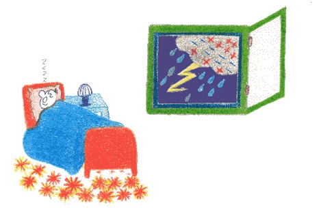Ein Gewitter ist eines der wohl interessantesten Naturphänomene unseres Wetters. Du kennst die Vorzeichen von einem aufziehenden Gewitter ganz bestimmt: schwarze, drohende Wolken und schwüle Luft. Und dann beginnt auch schon das laute und tiefe Grollen.
Warum gibt es überhaupt Gewitter? Was ist eigentlich ein Blitz?
du weißt ja schon, dass eine Wolke aus verschieden großen Wassertröpfchen besteht, und dass die, die größer sind, wegen der Schwerkraft der Erde schnell nach unten fallen, vorbei an kleinen Tröpfchen die in der Luft schweben. Dabei stoßen sie natürlich aufeinander. Beim Zusammenstoß werden Wassertröpfchen, je nach Größe, Lufttemperatur und anderen Umweltbedingungen, positiv oder negativ geladen. In einer Wolke sind positive und negative Ladungen voneinander getrennt.
Zwischen der positiv geladenen Erde und dem negativ geladenen Teil einer Gewitterwolke wird ein elektrisches Feld erzeugt, und dann kann es passieren: Gewitter! Wir sehen Blitze und hören lauten Donner. Manchmal sehen wir sogar viele Blitze auf einmal. Sogar innerhalb der Wolke gibt es Blitze, nur die können uns nicht erreichen. Aber was ist mit dem Blitz, der bis zum Boden geht? Warum haben wir immer ein bisschen Angst, dass uns ein Blitz erwischt? Als ich ein Kind war, habe ich mich immer gefragt, wie es möglich ist, dass ein Blitz zu uns kommen kann, und uns Schaden antun. Ich habe so gedacht, weil ich sicher war, dass man für eine elektrische Entladung ein Kabel braucht; ich habe aber keine Kabel vom Himmel hängen gesehen. Später habe ich verstanden, dass die Luft praktisch wie ein Kabel funktionieren kann.
Wie ist das nun möglich?
Unsere Luft ist eine Mischung aus verschiedenen Gasen, und der größte Teil davon ist Stickstoff (N2) und Sauerstoff (O2).
du weißt ja auch, dass Elektronen die interessante Eigenschaft besitzen, dass Sie es lieben zu reisen, und dabei meine ich nicht nur freie Elektronen – die in der Luft frei zwischen den Luftmolekülen fliegen. Wenn nun ein elektrisches Feld zwischen Boden und Wolke erzeugt wird, werden diese freien Elektronen anfangen sich zu bewegen, stoßen dabei andere Elektronen in Molekülen an – diejenigen Elektronen, die am weitesten vom Atomkern entfernt sind – und befreien so auch diese. Es werden mehr und mehr Elektronen, die sich plötzlich ganz schnell alle zusammen in eine Richtung anfangen zu bewegen, und dann entsteht ein Blitz in der Luft. Also kannst du dir einen Blitz, als viele in einem unsichtbaren Kabel fliegende Elektronen vorstellen.
Den Donner, den du kurz nach einem Blitz hörst – das laute Krachen, das einen so furchtbar zusammenzucken lässt ist nichts weiter, als viel Luft, die sich schnell verschieben muss. Das muss sie in sehr kurzer Zeit machen, um den Elektronen auf dem Weg zur Erde Platz zu machen, wenn diese den Blitz machen. Ungefähr so, wie wenn du die Hände zusammen klatschst, nur viel heftiger. Übrigens erschrecken wir uns meisten über den Donner, aber wirklich gefährlich ist der Blitz! Dieser ist aber auch nur gefährlich, wenn du bei einem Gewitter auf einer weiten Wiese stehst, unter einem Baum, oder hoch oben auf einem Berg. Dann können nämlich die Elektronen auf ihrem Weg zur Erde eine Abkürzung nehmen – über dich, und das wird dann schlimm enden… Das wichtigste ist, alle Bäume, hohe Gebäude und Wasser bei einem Gewitter zu meiden. Dann passiert uns nichts.
Warum füllen wir Reifen mit Luft, und nicht mit Wasser oder Steinen?
(почему шины надувают воздухом, а не заполняют водой или камнями?)
Wie unterscheiden sich Luft, Wasser und Steine voneinander (чем отличаются друг от друга воздух, вода и камень)? du wirst vermutlich sagen (ты, наверное, скажешь), dass Luft ein Gas ist (что воздух – это газ), Wasser ist flüssig (вода – жидкость: «жидкая») und Steine sind feste Körper (а камни – твердые тела). Da hast du Recht (в этом ты прав)! Der Unterschied liegt jedoch nur in der unterschiedlichen Entfernung zwischen den einzelnen Molekülen (их отличие, однако, только в различном расстоянии между отдельными молекулами). In der Luft sind Moleküle sehr weit voneinander entfernt (в воздухе молекулы далеко отстоят друг от друга), auch wenn sie mal aufeinander stoßen (даже если они иной раз наскакивают друг на друга), ist das nur Zufall (то только по случайности). Im Wasser sind die Moleküle wie Leute in einem nicht ganz gefüllten Zug (в воде молекулы – как люди в не совсем = не до конца заполненном поезде) – sie können schaukeln, sich bewegen und von einem leeren Platz zum anderen wechseln (они могут качаться, двигаться, менять одно свободное место на другое).
Moleküle in einem Stein ähneln jedoch eher Soldaten bei einer Parade (молекулы в камне, однако, больше похожи на солдат на параде; eher – скорее, больше).
Sie können sich drehen, bewegen, springen, aber nicht ihren Platz verlassen, so stark werden sie von ihren Nachbarn gehalten (они могут поворачиваться, двигаться, подпрыгивать, но с места уйти не могут, так крепко держат их соседи). Genau deshalb kannst du durch Luft viel leichter laufen als durch Wasser (именно из-за этого ты можешь продвигаться через воздух гораздо легче, чем через воду), und durch Steine kannst du überhaupt nicht laufen (а через камни ты вообще не сможешь пройти). Aus genau diesem Grund nimmt Luft und Wasser die Form Ihres «Behälters» an (именно по этой причине воздух и вода принимают форму сосуда, который они заполняют).
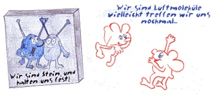Steine haben immer eine feste Form (камни имеют всегда твердую форму), die man nicht so leicht verändern kann (которую не так-то легко можно изменить), nur mit Hilfe eines speziellen Werkzeugs (только с помощью одного из специальных инструментов), wie beispielsweise mit Hammer und Meißel (как, например, молоток или резец). Da in der Luft die Moleküle am weitesten voneinander entfernt sind (так как в воздухе молекулы наиболее далеко отдалены друг от друга) – als diejenigen von Wasser oder Steinen (чем те, что принадлежат воде или камням), deshalb kann man Luft am besten zusammenpressen (поэтому воздух можно наиболее легко сжать), und wenn Luftmoleküle in einem Reifen zusammengepresst sind (и когда молекулы воздуха сжаты вместе внутри шины), wollen sie schon wieder raus und voneinander weglaufen (они снова хотят вырваться наружу и разбежаться прочь друг от друга). Sie probieren durch die Reifenwände rauszufliegen (они пытаются вылететь через стенки шины), aber das ist natürlich nicht möglich (solange du kein Loch im Reifen hast) (но это, конечно, невозможно (пока у тебя в шине нет дырки = прокола)). Deshalb drücken sie auf die Reifenwände und geben den Reifen ihre Form, richtig rund (поэтому они давят на стенки шины и придают им форму, по-настоящему круглую), genau im Bild, wo der eine Junge die Reifen richtig mit Luft vollpumpt, und der andere falsch mit Steinen füllt (точно как на картинке, где один мальчик накачивает шины правильно – воздухом, а другой ошибочно – заполняет их камнями; falsch – ошибочный, неправильный, неверный, ложный). Der, der versucht, die Reifen mit Steinen zu füllen, wird das nie schaffen (тот, который пытается заполнять шины камнями, никогда не справится с этим), und das Fahrrad wird mit Steinen gefüllten Reifen auch nicht fahren (и велосипед с заполненными камнями шинами никогда не поедет).
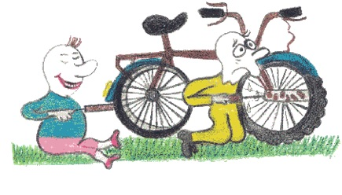Wie unterscheiden sich Luft, Wasser und Steine voneinander? du wirst vermutlich sagen, dass Luft ein Gas ist, Wasser ist flüssig und Steine sind feste Körper. Da hast du Recht! Der Unterschied liegt jedoch nur in der unterschiedlichen Entfernung zwischen den einzelnen Molekülen. In der Luft sind Moleküle sehr weit voneinander entfernt, auch wenn sie mal aufeinander stoßen, ist das nur Zufall. Im Wasser sind die Moleküle wie Leute in einem nicht ganz gefüllten Zug – sie können schaukeln, sich bewegen und von einem leeren Platz zum anderen wechseln.
Moleküle in einem Stein ähneln jedoch eher Soldaten bei einer Parade.
Sie können sich drehen, bewegen, springen, aber nicht ihren Platz verlassen, so stark werden sie von ihren Nachbarn gehalten. Genau deshalb kannst du durch Luft viel leichter laufen als durch Wasser, und durch Steine kannst du überhaupt nicht laufen. Aus genau diesem Grund nimmt Luft und Wasser die Form Ihres «Behälters» an.
Steine haben immer eine feste Form, die man nicht so leicht verändern kann, nur mit Hilfe eines speziellen Werkzeugs, wie beispielsweise mit Hammer und Meißel.
Da in der Luft die Moleküle am weitesten voneinander entfernt sind – als diejenigen von Wasser oder Steinen – kann man Luft am besten zusammenpressen, und wenn Luftmoleküle in einem Reifen zusammengepresst sind, wollen sie schon wieder raus und voneinander weglaufen. Sie probieren durch die Reifenwände rauszufliegen, aber das ist natürlich nicht möglich (solange du kein Loch im Reifen hast). Deshalb drücken sie auf die Reifenwände und geben den Reifen ihre Form, richtig rund, genau im Bild, wo der eine Junge die Reifen richtig mit Luft vollpumpt, und der andere falsch mit Steinen füllt. Der, der versucht, die Reifen mit Steinen zu füllen wird das nie schaffen, und das Fahrrad wird mit Steinen gefüllten Reifen auch nicht fahren.
Ist die Luft wirklich schwer?
(правда ли, что воздух тяжелый?)
Hast du dich je gefragt (спрашивал ли ты себя когда-нибудь), warum wir im Wetterbericht den Sprecher Folgendes sagen hören (почему в сводке о погоде мы слышим диктора, который говорит следующее): «Das Hochdruckgebiet über Mitteleuropa wird von einem starken Tiefdruckgebiet über Skandinavien weiter nach Süden geschoben… (область высокого давления над Средней Европой сдвигается областью сильного низкого давления над Скандинавией дальше к югу; schieben – двигать; толкать, отодвигать )”
Was heißt das (что это означает)? Drückt wirklich die Luft auf uns (действительно ли воздух давит на нас)? Hat die Luft ein Gewicht (есть ли у воздуха вес)?
Obwohl du das Gewicht der Luft nicht wirklich spüren kannst (хотя ты не можешь на самом деле почувствовать тяжесть воздуха), aber trotzdem drückt die Luft über uns ständig auf uns herab (но все равно воздух, находящийся над нами, постоянно давит на нас; ständig – постоянный; herab – указывает на движение сверху вниз по направлению к объекту). Die gesamte Luft in der Atmosphäre presst praktisch «sich selbst» auf die Erde herab (вся совокупность воздуха в атмосфере практически жмет саму себя вниз на землю; gesamt – совместный; целый; pressen – жать; сжимать), wegen der Erdanziehungskraft, die die Erde auch auf die Luft ausübt (благодаря силе притяжения, с которой земля действует на воздушные массы; ausüben – выполнять, исполнять; совершать; оказывать действие на). Gasmoleküle, aus denen die Luft besteht, fliegen ganz chaotisch über unseren Köpfen (газовые молекулы, из которых состоит воздух, хаотично передвигаются над нашими головами). Diese Moleküle haben auch eine Masse, und unterliegen deshalb auch der Schwerkraft (у этих молекул также есть масса, и поэтому они тоже находятся под влиянием силы тяжести; unterliegen – находиться внизу; уступать чему-либо).
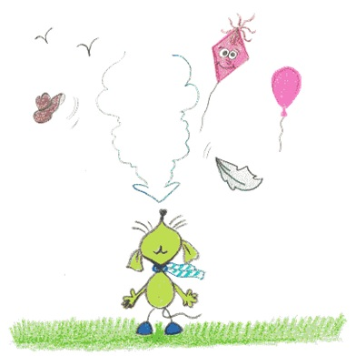Der höchste Luftdruck besteht ganz unten auf der Erdoberfläche (наиболее высокое давление воздуха существует совсем низко у поверхности земли; bestehen – существовать, продолжаться; сохраняться), und je weiter man in die Atmosphäre aufsteigt, desto geringer wird der Luftdruck (и чем дальше поднимаешься в атмосферу, тем ниже будет давление воздуха; aufsteigen – подниматься, всходить; gering – незначительный, малый, ничтожный). Der Luftdruck ändert sich jeden Tag (воздушное давление меняется каждый день) – eigentlich fast jeden Moment (собственно говоря, почти каждый момент) – aufgrund der Erwärmung und Abkühlung der Erdoberfläche (по причине нагревания и охлаждения земной поверхности).
du weißt ja, dass warme Luft leichter ist als kühle (ты ведь знаешь, что теплый воздух легче холодного), und deswegen weniger Druck auf uns ausübt (и поэтому давит на нас с меньшим давлением; ausüben – выполнять, исполнять; совершать).
Wir können beobachten, wie der atmosphärische Druck sich ändert (мы можем наблюдать, как изменяется атмосферное давление). Dafür haben deine Eltern bestimmt ein Barometer zu Hause, und wenn du fragst, werden sie es unbedingt dir zeigen (для этого у твоих родителей несомненно найдется дома барометр, и если ты попросишь, они обязательно покажут его тебе). Luftdruck ist ein sehr wichtiges Naturphänomen (давление воздуха это очень важный феномен природы = очень важное явление природы). Wir benutzen den Luftdruck die ganze Zeit (мы все время используем давление воздуха), zum Beispiel wenn wir atmen (например, когда мы дышим). Dank ihm, geht die Luft in unsere Lungen rein und breitet sich entlang der Lungenwände aus (благодаря ему воздух входит во внутрь = заполняет наши легкие и распространяется вдоль их стенок); ohne den Luftdruck ginge das nicht (без давления воздуха это бы не прошло = не произошло), da sich die Luft in den Lungen nicht ausbreiten würde (так как воздух не стал бы распространяться в легких) – vorausgesetzt wir würden es schaffen, sie überhaupt einzuatmen (при условии, что нам бы удалось вообще вдохнуть). In deinen Fahrradreifen muss mindestens genauso viel Luftdruck herrschen (в твоих велосипедных шинах должно быть: «царить, властвовать» самое малое = как минимум такое же давление воздуха), wie draußen (как снаружи), sonst werden deine Reifen platt und du kannst nicht mehr fahren (иначе твои шины станут плоскими = сплющатся, и ты не сможешь больше сдвинуться с места: «не сможешь ехать»). In dem Fall hilft dir deine Luftpumpe (в этом случае тебе поможет воздушный насос)! Also Luftdruck ist nicht nur einfach so da, er ist sehr wichtig in unserem Leben (итак, давление воздуха существует не просто так, оно очень важно в нашей жизни).
Hast du dich je gefragt, warum wir im Wetterbericht den Sprecher Folgendes sagen hören: «Das Hochdruckgebiet über Mitteleuropa wird von einem starken Tiefdruckgebiet über Skandinavien weiter nach Süden geschoben...»
Was heißt das? Drückt wirklich die Luft auf uns? Hat die Luft ein Gewicht?
Obwohl du das Gewicht der Luft nicht wirklich spüren kannst, trotzdem drückt die Luft über uns ständig auf uns herab. Die gesamte Luft in der Atmosphäre presst praktisch «sich selbst» auf die Erde herab, wegen der Erdanziehungskraft, die die Erde auch auf die Luft ausübt. Gasmoleküle, aus denen die Luft besteht, fliegen ganz chaotisch über unseren Köpfen. Diese Moleküle haben auch eine Masse, und unterliegen deshalb auch der Schwerkraft.
Der höchste Luftdruck besteht ganz unten auf der Erdoberfläche, und je weiter man in die Atmosphäre aufsteigt, desto geringer wird der Luftdruck. Der Luftdruck ändert sich jeden Tag – eigentlich fast jeden Moment – aufgrund der Erwärmung und Abkühlung der Erdoberfläche.
du weißt ja, dass warme Luft leichter ist als kühle, und deswegen weniger Druck auf uns ausübt.
Wir können beobachten, wie der atmosphärische Druck sich ändert. Dafür haben deine Eltern bestimmt ein Barometer zu Hause, und wenn du fragst, werden sie es unbedingt dir zeigen. Luftdruck ist ein sehr wichtiges Naturphänomen. Wir benutzen den Luftdruck die ganze Zeit, zum Beispiel wenn wir atmen. Dank ihm, geht die Luft in unsere Lungen rein und breitet sich entlang der Lungenwände aus; ohne den Luftdruck ginge das nicht, da sich die Luft in den Lungen nicht ausbreiten würde – vorausgesetzt wir würden es schaffen, sie überhaupt einzuatmen. In deinen Fahrradreifen muss mindestens genauso viel Luftdruck herrschen, wie draußen, sonst werden deine Reifen platt und du kannst nicht mehr fahren. In dem Fall hilft dir deine Luftpumpe! Also Luftdruck ist nicht nur einfach so da, er ist sehr wichtig in unserem Leben.
Warum fliegt ein Luftballon?
(почему летит воздушный шар?)
Als ich noch klein war (когда я была маленькой), habe ich immer davon geträumt wie «Winnie the Pooh» eines Tages mit einem roten Luftballon zu fliegen (я всегда мечтала когда-нибудь полететь с красным шариком, подобно Винни-Пуху).
Wie ich dann groß geworden bin (когда я стала взрослой = повзрослела), bin ich doch mit einem roten Luftballon geflogen (я все же сумела полететь на красном воздушном шаре).
Der einzige Unterschied zu meinem Traum war (единственная разница с моей мечтой заключалась в том), dass ich in einem Korb gesessen habe (что я сидела в корзине), und könnte leider mich nicht wie Winnie am Ende einer Schnur festhalten (и, к сожалению, не могла, как Винни, держаться за конец шнура).
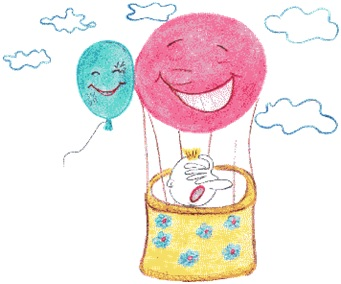Ich habe mich natürlich gefragt, wie das möglich ist, dass ein Luftballon fliegt (я, конечно, спрашивала себя, как это возможно, что воздушный шар летит)? Er fliegt, wenn die Luft in seinem Inneren heiß wird oder er mit einem Gas gefüllt ist (он летит, потому что воздух внутри него становится горячим = нагревается или /потому что/ он наполнен газом), welches den Namen «Helium» trägt (который называется гелием). Darum heißen die großen fliegenden Ballons (поэтому и называются большие летательные баллоны) Heißluftballons oder dementsprechend Helium Luftballons (баллонами горячего воздуха или, соответственно, баллонами гелия). Helium ist ein natürliches Edelgas (гелий – это натуральный благородный газ), nicht giftig (не ядовитый) und ein Teil unserer Atmosphäre (и является частью нашей атмосферы). Helium ist leichter als Luft (гелий легче, чем воздух) und deshalb Sachen, die mit diesem Gas gefüllt sind, schweben in der Luft (и поэтому предметы, наполненные этим газом, парят в воздухе).
Heißluftballons funktionieren nach dem folgenden Prinzip (баллоны горячего воздуха действуют согласно следующему принципу): wenn Luftmoleküle erhitzt werden (когда молекулы воздуха нагреваются); fangen sie an sich schnell zu bewegen (они начинают быстро двигаться) und fliegen durch eine spezielle Öffnung im Oberteil der Hülle der Ballons heraus (и вылетают через специальное отверстие в верхней части покрова баллона наружу; die Hülle – оболочка, покрытие). Somit bleibt im inneren Teil des Ballons nur wenig Luft (таким образом, во внутренней части баллона остается лишь немного воздуха; somit – итак, таким образом, следовательно), weil ein Teil der Luft rausgeflogen ist (потому что часть воздуха вылетела наружу), und wenig Luft hat auch weniger Gewicht (и небольшое количество воздуха имеет также меньший вес). Jeder Luftballon kann nicht sehr hoch fliegen (любой воздушный баллон не может лететь слишком высоко), weil in großer Höhe die Luft dünner wird (потому что на большой высоте воздух становиться разреженным), das bedeutet weniger Luftmoleküle (это означает также меньшее количество молекул в воздухе). Deshalb auf einer bestimmten Höhe wird die Luft genau so schwer wie die Luft im Ballon (поэтому на определенной высоте воздух снаружи становится таким же тяжелым, как и воздух в баллоне), dann kann der Luftballon nicht mehr höher steigen (тогда воздушный шар не сможет больше подниматься выше). Trotzdem bin ich in meinem Traum bis zum Mond geflogen mit roten Luftballon… aber das ist nur ein Traum (и все же, в моих мечтах я долетела до луны на красном шаре… но это лишь в мечтах; trotzdem – не смотря на то, что; хотя, не смотря на это, все же).
Der Heißluftballon war das erste Fluggerät überhaupt, mit dem sich Menschen erfolgreich in die Luft erheben konnten (баллон горячего воздуха был вообще первым летательным аппаратом, на котором люди смогли успешно подняться в воздух).
Als ich noch klein war, habe ich immer davon geträumt wie «Winnie the Pooh» eines Tages mit einem roten Luftballon zu fliegen.
Wie ich dann groß geworden bin, bin ich doch mit einem roten Luftballon geflogen.
Der einzige Unterschied zu meinem Traum war, dass ich in einem Korb gesessen habe, und könnte leider mich nicht wie Winnie am Ende einer Schnur festhalten.
Ich habe mich natürlich gefragt, wie das möglich ist, dass ein Luftballon fliegt? Er fliegt, wenn die Luft in seinem Inneren heiß wird oder er mit einem Gas gefüllt ist, welches den Namen «Helium» trägt. Darum heißen die grossen fliegenden Ballons Heißluftballons oder dementsprechend Helium. Helium ist ein natürliches Edelgas, nicht giftig und ein Teil unserer Atmosphäre. Helium ist leichter als Luft und deshalb Sachen, die mit diesem Gas gefüllt sind, schweben in der Luft.
Heißluftballons funktionieren nach dem folgenden Prinzip: wenn Luftmoleküle erhitzt werden, fangen sie an sich schnell zu bewegen und fliegen durch eine spezielle Öffnung im Oberteil der Hülle der Ballons heraus. Somit bleibt im inneren Teil des Ballons nur wenig Luft, weil ein Teil der Luft rausgeflogen ist, und wenig Luft hat auch weniger Gewicht. Aber jeder Luftballon kann nicht sehr hoch fliegen, weil in großer Höhe die Luft dünner wird, das bedeutet weniger Luftmoleküle und deshalb auf einer bestimmten Höhe wird die Luft genau so schwer wie die Luft im Ballon, dann kann er nicht mehr höher steigen. Trotzdem bin ich in meinem Traum bis zum Mond geflogen mit rotem Luftballon… aber das ist nur ein Traum.
Der Heißluftballon war das erste Fluggerät überhaupt, mit dem sich Menschen erfolgreich in die Luft erheben konnten.
Warum sind Pflanzen grün?
(почему растения зеленые?)
Aber warum, eigentlich, sind die Pflanzen im Sommer grün (почему, собственно, растения летом зеленые)?
Das ist wieder einmal die «Schuld» von einem Sonnenstrahl (и в этом опять «виноват» солнечный лучик)!
Luft ist ja bekanntlich eine Mischung aus verschiedenen Gasen, und eins davon ist sehr wichtig, unbedingt nötig fürs Leben (воздух, как известно, это смесь разных газов, один из которых абсолютно важен для жизни; unbedingt – безусловный, безоговорочный, полный, абсолютный). Ohne dieses Gas könnten wir Menschen und die allermeisten Tiere keine 5 Minuten überleben, wir würden ersticken (без него мы, люди и большинство животных, не прожили бы и пяти минут, задохнулись бы).
Dieses Gas ist Sauerstoff (O2) (этот газ называется кислородом (O2)). Wir brauchen viel von diesem Gas, damit alle auf unserer Erde ohne Unterbrechung atmen können (нам необходимо большое количество этого газа, для того чтобы все жители земли могли бы беспрерывно дышать; die Unterbrechung – перерыв, прерывание). Wir atmen Sauerstoff ein, und Kohlendioxid (CO2) aus (мы вдыхаем кислород и выдыхаем углекислый газ (CO2)). Gibt es wirklich so viel Sauerstoff, dass er nie zu Ende ist (правда ли, что кислорода так много, что он никогда не заканчивается)?
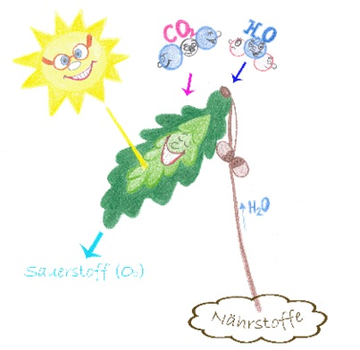Nun, das ist eine gute Frage (хороший вопрос)! Damit alle Lebewesen immer genug Sauerstoff haben werden (/за то/ чтобы кислорода всегда было достаточно для всех живых организмов), sind wir – Menschen – verantwortlich (ответственны мы – люди). Wer produziert denn den neuen Sauerstoff (кто же производит новый кислород), reinigt die Luft vom Überschuss an Kohlendioxid (очищает его от излишней углекислоты; der Überschuss – излишек) und gibt uns eine Chance zum Leben (и дает нам возможность жить)?
Aber natürlich, grüne Blätter (ну конечно же, зеленые листья)! Pflanzen atmen auch, nur im Unterschied zu Menschen, atmen sie nicht Sauerstoff ein und Kohlendioxid aus, sondern umgekehrt: CO2 ein, und O2 aus (растения тоже дышат, но, в отличие от людей, вбирают в себя не кислород и выделяют углекислоту, а наоборот, вдыхают CO2 и выдыхают O2)!
Für jede Pflanze ist ein Sonnestrahl die Hauptlebensquelle (для каждого растения солнечный лучик – главный источник жизни). Nun, ein Sonnenstrahl fällt aufs Blatt (итак, луч солнца падает на листик). In jedem Blatt, zwischen seinen Molekülen, gibt es auch ganz spezielle Moleküle, die Chlorophyll heißen (в каждом листе, среди его молекул, есть совершенно специальные, которые называются хлорофиллом)! Im Chlorophyll werden die wichtigsten Substanzen produziert, aus denen der größte Teil unseres Körpers gebaut ist: Zucker, Stärke und Proteine (в нем вырабатываются самые важные вещества из которых, главным образом, построено наше тело: сахар, крахмал, белки).
Diese Substanzen machen Pflanzen nur mit Hilfe von Sonnenstrahlen und CO2, das sie aus der Luft aufnehmen (растение вырабатывает эти вещества с помощью солнечных лучей, воды и углекислоты, поглощаемой им из воздуха; aufnehmen – поглощать; присоединять, захватывать).
Aber unsere Frage war eigentlich ein wenig anders: warum sind Blätter und Gras grün (но наш первоначальный вопрос был несколько иным: почему же все-таки лист и трава зеленые)? Wegen dem Chlorophyll (благодаря хлорофиллу)! Es hat eine ganz interessante Eigenschaft (у него есть очень интересное свойство): es nimmt alle Farben aus dem Sonnenspektrum auf, außer Grün – grünes Licht wird vom Chlorophyll reflektiert, ganz einfach zurück geschickt, und darum sehen wir ein Blatt eben so wie es ist: grün (поглощать все цвета солнечного спектра, кроме зеленого, зеленый луч он отражает, просто посылает назад, и из-за этого мы видим лист таким, каким он и является: зеленым; eben – именно, как раз)!
Aber warum, eigentlich, sind die Pflanzen im Sommer grün?
Das ist wieder einmal die «Schuld» von einem Sonnenstrahl!
Luft ist ja bekanntlich eine Mischung aus verschiedenen Gasen, und eins davon ist sehr wichtig, unbedingt nötig fürs Leben. Ohne dieses Gas könnten wir Menschen und die allermeisten Tiere keine 5 Minuten überleben, wir würden ersticken.
Dieses Gas ist Sauerstoff (O2). Wir brauchen viel von diesem Gas, damit alle auf unserer Erde ohne Unterbrechung atmen können. Wir atmen Sauerstoff ein, und Kohlendioxid (CO2) aus. Gibt es wirklich so viel Sauerstoff, dass er nie zu Ende ist?
Nun, das ist eine gute Frage! Damit alle Lebewesen immer genug Sauerstoff haben werden, sind wir – Menschen – verantwortlich. Wer produziert denn den neuen Sauerstoff, reinigt die Luft vom Überschuss an Kohlendioxid und gibt uns eine Chance zum Leben?
Aber natürlich, grüne Blätter! Pflanzen atmen auch, nur im Unterschied zu Menschen, atmen sie nicht Sauerstoff ein und Kohlendioxid aus, sondern umgekehrt: CO2 ein, und O2 aus!
Für jede Pflanze ist ein Sonnestrahl die Hauptlebensquelle. Nun, ein Sonnenstrahl fällt aufs Blatt. In jedem Blatt, zwischen seinen Molekülen, gibt es auch ganz spezielle Moleküle, die Chlorophyll heißen! Im Chlorophyll werden die wichtigsten Substanzen produziert, aus denen der größte Teil unseres Körpers gebaut ist: Zucker, Stärke und Proteine.
Diese Substanzen machen Pflanzen nur mit Hilfe von Sonnenstrahlen und CO2, das sie aus der Luft aufnehmen.
Aber unsere Frage war eigentlich ein wenig anders: warum sind Blätter und Gras grün? Wegen dem Chlorophyll! Es hat eine ganz interessante Eigenschaft: es nimmt alle Farben aus dem Sonnenspektrum auf, außer Grün – grünes Licht wird vom Chlorophyll reflektiert, ganz einfach zurück geschickt, und darum sehen wir ein Blatt eben so wie es ist: grün!
Warum ist Schnee weiß?
(почему снег белый?)
Da ist doch wieder unser vielfarbiger Sonnenstrahl «schuld» (тут опять же «виноват» многоцветный солнечный луч). Es ist bekannt, dass wenn ein Körper den Sonnenstrahl vollständig aufsaugt, wird der Körper schwarz aussehen (известно, что если тело полностью поглощает солнечный луч, то оно видится нам черным). Und umgekehrt, wenn ein Körper den Sonnenstrahl vollständig reflektiert, dann wird er weiß aussehen (и наоборот, если тело полностью отражает луч солнца, то оно будет выглядеть как белое). Und wenn ein Körper den Sonnenstrahl vollständig durchlässt, dann wird er durchsichtig (а если же тело свободно пропускает весь солнечный лучик – тогда оно становится прозрачным).
Jede einzelne Schneeflocke würde den Sonnenstrahl durchlassen, da sie bekanntlich aus Eis besteht, und Eis ist farblos (каждая снежинка в отдельности свободно пропускала бы через себя луч солнца, ведь, как известно, она состоит изо льда, а лед бесцветен). Warum ist dann Schnee nicht durchsichtig (почему же тогда снег не прозрачен)? Das ist einfach (очень просто): der Unterschied zwischen Eis und Schnee besteht in der Menge der eingeschlossenen Luft (отличие льда от снега состоит в количестве «запертого» в них воздуха). Im Eis ist kaum Luft vorhanden (во льде находится очень мало воздуха), während Schnee aus vielen Luftbläschen besteht (в то время как снег состоит из многочисленных пузырьков воздуха), die von gefrorenem Wasser zusammengehalten werden (которые удерживаются/скрепляются замерзшей водой). Luft und Wasser lassen Licht durch (воздух и вода пропускают свет /через себя/), sie sind also durchsichtig (а значит, являются прозрачными). An der Oberfläche wird aber immer etwas Licht reflektiert (но на их поверхности все время отражается небольшое количество света). Da Schnee mit seinen vielen Luftbläschen (поскольку снег со своими многочисленными пузырьками воздуха) auch ebenso viele Oberflächen aufweist (имеет столь же много поверхностей; aufweisen – показывать, предъявлять; иметь, проявлять, обнаруживать; ebenso – /точно/ так же, таким же образом; в такой же степени), wird im Gegensatz zu Eis entsprechend mehr Licht reflektiert (/на нем/, в отличие от льда, будет отражаться, соответственно, больше света; aufweisen – оказывать, предъявлять, обнаруживать; иметь, проявлять, ebenso – так же, таким же образом). Deshalb ist Schnee nicht durchsichtig, sondern weiß (поэтому снег не прозрачный, а белый; sondern – но, а /после отрицания/).
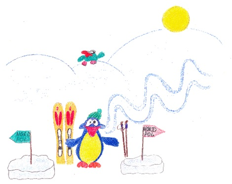Da ist doch wieder unser vielfarbiger Sonnenstrahl «schuld». Es ist bekannt, dass wenn ein Körper den Sonnenstrahl vollständig aufsaugt, wird der Körper schwarz aussehen. Und umgekehrt, wenn ein Körper den Sonnenstrahl vollständig reflektiert, dann wird er weiß aussehen. Und wenn ein Körper den Sonnenstrahl vollständig durchlässt, dann wird er durchsichtig.
Jede einzelne Schneeflocke würde den Sonnenstrahl durchlassen, da sie bekanntlich aus Eis besteht, und Eis ist farblos. Warum ist dann Schnee nicht durchsichtig? Das ist einfach: der Unterschied zwischen Eis und Schnee besteht in der Menge der eingeschlossenen Luft. Im Eis ist kaum Luft vorhanden, während Schnee aus vielen Luftbläschen besteht, die von gefrorenem Wasser zusammengehalten werden. Luft und Wasser lassen Licht durch, sie sind also durchsichtig. An der Oberfläche wird aber immer etwas Licht reflektiert. Da Schnee mit seinen vielen Luftbläschen auch ebenso viele Oberflächen aufweist, wird im Gegensatz zu Eis entsprechend mehr Licht reflektiert. Deshalb ist Schnee nicht durchsichtig, sondern weiß.
Warum fällt der Apfel runter vom Baum?
(почему яблоко падает с дерева вниз?)
Was hält eigentlich das Weltall zusammen (что же, собственно, удерживает: «держит вместе» всю вселенную)? Warum fliegt der Mond nicht einfach davon (почему луна не улетает просто так прочь; davonfliegen – улетать; davon – прочь)?
Wie es in der Legende heißt, saß eines fernen Tages im Jahr 1665 der Wissenschaftler Sir Isaac Newton unter einem Apfelbaum (как рассказывается в легенде, в далеком прошлом 1665 году ученый Исаак Ньютон сидел под яблоней), als er einen Apfel vom Baum zu Boden fallen sah (когда он увидел, как яблоко падает с дерева на землю). Daraufhin fragte er sich, ob die Kraft, die den Apfel bodenwärts zog, nicht etwa die gleiche sei, die den Mond in seiner Bahn hält (на основании этого он задался вопросом: /не/ является ли сила, которая тянет яблоко к земле, той же самой, которая держит луну на ее орбите; ziehen – тянуть, тащить; daraufhin – после этого, на основании этого).
Nach jahrelanger Arbeit konnte Newton schließlich demonstrieren, dass das Fallen der Äpfel verdanken wir der Schwerkraft oder der so genannten Erdanziehungskraft (после долгих лет работы Ньютон, в конце концов, смог продемонстрировать, что падением яблок мы обязаны силе тяжести или так называемой силе притяжения земли).
Sie sorgt auch dafür, dass die Menschen in Australien nicht von der Erdkugel fallen, der Stein immer nach unten fällt und für mehrere andere Phänomene (она также ответственна за то: «заботится о том», что люди в Австралии не падают с земного шара, что камень всегда падает вниз, и за многие другие явления).
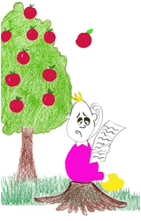Was hält eigentlich das Weltall zusammen? Warum fliegt der Mond nicht einfach davon?
Wie es in der Legende heißt, saß eines fernen Tages im Jahr 1665 der Wissenschaftler Sir Isaac Newton unter einem Apfelbaum, als er einen Apfel vom Baum zu Boden fallen sah. Daraufhin fragte er sich, ob die Kraft, die den Apfel bodenwärts zog, nicht etwa die gleiche sei, die den Mond in seiner Bahn hält.
Nach jahrelanger Arbeit konnte Newton schließlich demonstrieren, dass das Fallen der Äpfel verdanken wir der Schwerkraft oder so der genannten Erdanziehungskraft.
Sie sorgt auch dafür, dass die Menschen in Australien nicht von der Erdkugel fallen, der Stein immer nach unten fällt und für mehrere andere Phänomene.
Warum fliegt ein Flugzeug?
(почему летит самолет?)
Kannst du dich noch daran erinnern, warum ein Luftballon fliegt (ты еще помнишь, почему летает воздушный шар)?
Ein Flugzeug ist aber viel schwerer als Luft (cамолет, однако, значительно тяжелее воздуха), die von ihm ersetzt wird (вытесняемого им), trotzdem fliegt ein Flugzeug (но все равно самолет летит; trotzdem – не смотря на это)! Warum (почему же)?
Hier hilf die Bewegung nicht die Luft (здесь движению помогает не воздух), wie beim Luftballon (как в случае с воздушным шаром), aber eine Hebekraft (а подъемная сила; heben – поднимать). Diese Kraft kann nur existieren, und wird nur dann geboren (эта сила существует, и может быть создана: «рождена» лишь в том случае), wenn das Flugzeug eine bestimmte Geschwindigkeit erreicht hat (когда самолет достигнет определенную скорость), und wenn es sich schnell durch die Luft bewegt (и если он быстро движется в воздухе).
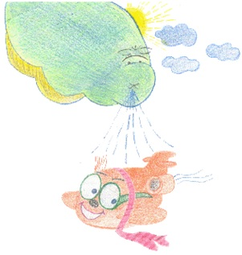Ein Flugzeugflügel hat eine ganz besondere Form (форма крыла самолета имеет особую форму), das ist ganz wichtig, damit es überhaupt fliegen kann (ведь это очень важно, чтобы он мог вообще лететь). Dank der speziellen Form des Flügels (благодаря специальной форме крыла) muss sich die Luftmasse wie vor einer Straßenabzweigung teilen (воздушная масса должна разделиться, как перед разветвлением дороги), die Luftwege kommen jedoch wieder zusammen – wenn sie den ganzen Flügel umfasst haben (воздушные дорожки, тем не менее, сходятся снова в одну, как только они охватили все крыло). Der Weg oben über den Flügel ist aber viel weiter als der unten herum (путь над крылом, однако, намного длиннее, чем тот, что под крылом; herum – вокруг, кругом) deshalb muss sich der obere Teil der Luft mehr beeilen (поэтому верхняя /над крылом/ часть воздуха должна больше торопиться), damit er im genau gleichen Moment wie die Luft die unten rumfließt am Ende des Flügels ankommt (для того, чтобы в тот же самый момент, как и воздух, проходящий: «обтекающий» внизу крыла, подойти к концу крыла). Das kannst du dir so vorstellen (ты можешь представить это следующим образом): dein Freund und du fahren mit euren Fahrrädern auf einer flachen Straße (ты катаешься со своим другом на велосипеде по ровной улице), und da kommt ihr an eine Gabelung (и затем вы подъезжаете к разветвлению). Der eine Teil der Straße führt über einen leichten Hügel (одна часть улицы проходит через легкий = невысокий холм), der andere ein ganz wenig durch eine Senke (другая же часть улицы проходит немного через спуск). Ihr müsst euch aufteilen (вы должны разделиться), weil der Weg nun für beide zu schmal geworden ist (потому что путь для двоих стал слишком тесен); also fährt dein Freund über den Hügel (итак, твой друг едет по холму), aber du ganz wenig durch eine Senke (а ты чуть-чуть с горки). Ihr macht jedoch ab (вы договариваетесь; etwas abmachen – договариваться, условливаться /очем-либо/), dass ihr genau zur gleichen Zeit hinter dem Hindernis treffen müsst (что вы должны встретится за препятствием в одно и то же время; das Hindernis – препятствие, помеха, заграждение) – dort wo die Straße wieder zusammenkommt (там, где улица снова сходится). Es ist dir jetzt schon klar (теперь тебе понятно), dass dein Freund viel mehr trampeln muss als Du (что твоему другу придется больше работать: «топать, стучать ногами», чем тебе) und auch dass er ganz außer Atem und geschwitzt im Treffpunkt ankommt (а также, что он прибудет в место встречи, совсем запыхавшись и вспотев; außer Atem – запыхавшись: «вне дыхания»). So ergeht es auch der Luft vor einem Flugzeugflügel (также происходит и с воздухом /плывущим/ перед крылом самолета)!
Speziell ist aber der Effekt (но особенным является эффект), dass wegen der schnelleren Luft oben am Flügel (что из-за ускоряющегося воздуха над крылом самолета) das Flugzeug praktisch von der Luft hoch gezogen wird (самолет как-будто подтягивается воздухом наверх).
Also heben die Luftflüsse das Flugzeug hoch (итак, воздушные потоки поднимают самолет наверх), und durch den Luftstrom wird auch die Hebekraft geboren (и из-за воздушного потока рождается подъемная сила). Da dein Freund keine «Luft» ist (так как твой друг – не воздух), und sich auch nicht so schnell bewegen kann wie ein Flugzeug (и не может передвигаться так быстро, как самолет) wird er sich nicht heben, und den Hügel, auf dem er mit seinem Rad fährt, sicher auch nicht (он не станет приподниматься, и холм, по которому он катится на своем велосипеде, конечно же, тоже не /приподнимет/).
Natürlich fliegt das Flugzeug auch (конечно, самолет также летит), weil es Motoren hat (потому что у него есть моторы), die es vorwärts bewegen (которые двигают его вперед). Wenn es keine hat (если же у него их нет), muss es von einem anderen auf die nötige Geschwindigkeit gezogen werden (то необходимая скорость должна быть извлечена из чего-либо другого) – das ist der Fall bei Segelflugzeugen, die keine Motoren haben (как в случае с планерами, у которых нет моторов; das Segel – парус).
Wenn die Hebekraft gleich groß ist wie die Gravitationskraft auf der Erde (когда подъемная сила становится такой же по величине, как и сила притяжения земли = приравнивается к силе притяжения земли), fliegt es geradeaus (он летит прямо), das Flugzeug ist dann im «Gleichgewicht» (тогда самолет находится в состоянии равновесия). Zum Landen senkt der Pilot die Nase des Flugzeugs (для приземления пилот опускает нос самолета), und bringt es somit runter (и таким образом ведет его вниз), und beim Starten muss er die Nase nach oben tun (а при старте он должен поднимать нос /самолета/).
Sagt der Pilot den Passagieren, dass sie sich anschnallen müssen (если пилот объявляет пассажирам, что они должны пристегнуться), ist das nicht aus Spaß (это не ради развлечения), oder nur damit alle an ihrem Platz sitzen bleiben (или только для того, чтобы все сидели на своих местах), sondern meistens weil das Flugzeug sein Gleichgewicht verliert (а в большинстве случаев потому, что самолет теряет равновесие). Das kann sein, weil der Pilot starten oder landen will (это может быть потому, что пилот хочет взлететь или приземлиться), oder auch wenn er durch schlechtes Wetter fliegt (или когда/если он летит при плохой погоде), und die Luft etwas wild rauf und runter bläst (и ветер яростно дует сверху и снизу), und dabei das Flugzeug ein wenig mitnimmt (и немного берет = передвигает с собой самолет). Also anschnallen sollte man sich im Flugzeug, damit man nicht aus dem Sitz fliegt, wenn das Flugzeug stark seine Richtung ändert (итак, пристегиваться в самолете надо для того, чтобы не слететь со своего сидения, когда самолет резко меняет направление).
Kannst du dich noch daran erinnern, warum ein Luftballon fliegt?
Ein Flugzeug ist aber viel schwerer als Luft, die von ihm ersetzt wird, trotzdem fliegt ein Flugzeug! Warum?
Hier hilf die Bewegung nicht die Luft, wie beim Luftballon, aber eine Hebekraft. Diese Kraft kann nur existieren, und wird nur dann geboren, wenn das Flugzeug eine bestimmte Geschwindigkeit erreicht hat, und wenn es sich schnell durch die Luft bewegt.
Ein Flugzeugflügel hat eine ganz besondere Form, das ist ganz wichtig, damit es überhaupt fliegen kann. Wegen der speziellen Form des Flügels muss sich die Luftmasse wie vor einer Straßenabzweigung teilen, die Luftwege kommen jedoch wieder zusammen – wenn sie den ganzen Flügel umfasst haben. Der Weg oben über den Flügel ist aber viel weiter als der unten herum, deshalb muss sich der obere Teil der Luft mehr beeilen, damit er im genau gleichen Moment wie die Luft, die unten rumfließt, am Ende des Flügels ankommt. Das kannst du dir so vorstellen: dein Freund und du fahren mit euren Fahrrädern auf einer flachen Straße, und da kommt ihr an eine Gabelung. Der eine Teil der Straße führt über einen leichten Hügel, der andere ein ganz wenig durch eine Senke. Ihr müsst euch aufteilen, weil der Weg nun für beide zu schmal geworden ist; also fährt dein Freund über den Hügel, aber du ganz wenig durch eine Senke. Ihr macht jedoch ab, dass ihr genau zur gleichen Zeit hinter dem Hindernis treffen müsst – dort wo die Straße wieder zusammenkommt. Es ist dir jetzt schon klar, dass dein Freund viel mehr trampeln muss als du und auch dass er ganz außer Atem und geschwitzt im Treffpunkt ankommt. So ergeht es auch der Luft vor einem Flugzeugflügel!
Speziell ist aber der Effekt, dass wegen der schnelleren Luft oben am Flügel das Flugzeug praktisch von der Luft hoch gezogen wird.
Also heben die Luftflüsse das Flugzeug hoch, und durch den Luftstrom wird auch die Hebekraft geboren. Da dein Freund keine «Luft» ist, und sich auch nicht so schnell bewegen kann wie ein Flugzeug, wird er sich nicht heben, und den Hügel, auf dem er mit seinem Rad fährt, sicher auch nicht.
Natürlich fliegt das Flugzeug auch, weil es Motoren hat, die es vorwärts bewegen. Wenn es keine hat, muss es von einem anderen auf die nötige Geschwindigkeit gezogen werden – das ist der Fall bei Segelflugzeugen, die keine Motoren haben.
Wenn die Hebekraft gleich groß ist wie die Gravitationskraft auf der Erde, fliegt es geradeaus, das Flugzeug ist dann im «Gleichgewicht». Zum Landen senkt der Pilot die Nase des Flugzeugs und bringt es somit runter, und beim Starten muss er die Nase nach oben tun.
Sagt der Pilot den Passagieren, dass sie sich anschnallen müssen, ist das nicht aus Spaß, oder nur damit alle an ihrem Platz sitzen bleiben, sondern meistens weil das Flugzeug sein Gleichgewicht verliert. Das kann sein, weil der Pilot starten oder landen will, oder auch wenn er durch schlechtes Wetter fliegt, und die Luft etwas wild rauf und runter bläst, und dabei das Flugzeug ein wenig mitnimmt. Also anschnallen sollte man sich im Flugzeug, damit man nicht aus dem Sitz fliegt, wenn das Flugzeug stark seine Richtung ändert.
Warum schwimmt ein Schiff?
(почему плавает корабль?)
du denkst wahrscheinlich (ты, вероятно, думаешь), dass Wasser schwere Sachen nach unten zieht (что вода тянет тяжелые вещи вниз), und leichte Dinge oben schwimmen (а легкие плавают сверху). Das ist genau so (точно так и есть)! Warum kann dann ein schweres Schiff sich auf dem Wasser halten (почему же тогда тяжелый кораблик может держаться на воде)?
Schiffe schwimmen nicht nur, weil sie Motoren und andere Maschinen haben (корабли плавают не только потому, что у них есть моторы и другие механизмы), aber deshalb bewegen sie sich (но они движутся благодаря этому). du sagst dann (ты тогда скажешь), vielleicht (возможно), ein Schiff schwimmt, weil es eine runde Form unten her hat (кораблик плывет потому что он имеет округлую форму снизу; unten her – снизу). Auch nicht ganz deshalb (тоже не совсем поэтому). Fluss-Schiffe (речные корабли), zum Beispiel, haben keinen runden oder spitz nach unten zeigenden Boden (например, не имеют никакого круглого или заостренного, смотрящего книзу дна); sie sind unten ganz flach (они совершенно плоские внизу).
Das Wichtigste für ein Schiff ist (самое главное для кораблика), damit es schwimmen kann (для того, чтобы он мог плавать), die richtige Gewichtsverteilung (правильное распределение веса; die Verteilung – распределение; раздача; размещение).
Wenn du selbst ein Schiff bauen möchtest (если ты сам хочешь построить кораблик), musst du das Gewicht von der ganzen Konstruktion so rechnen (тебе нужно так рассчитать вес всей конструкции), dass das Gewicht von dem Ganzen (так, что вес всего вместе), auch der Teil der nicht im Wasser ist (а также части, находящейся над водой), mit Passagieren und Gepäck (с пассажирами и багажом), nicht schwerer wird als die Konstruktion voll mit Wasser (не будет тяжелее, чем вся конструкция, заполненная водой = если заполнить ее водой). Dann wird nämlich dein Schiff leichter sein als Wasser (тогда именно твой кораблик будет легче, чем вода), und du kannst mit ihm auf Reisen gehen (и ты можешь отправиться с ним/на нем в путешествие). Vergiss aber nicht, dass kein Wasser in dein Schiff fließen darf (не забудь однако, что воде нельзя затекать внутрь корабля), sonst kann eine Katastrophe geschehen und dein Schiff wird sinken (иначе может произойти катастрофа и твой корабль потонет)…
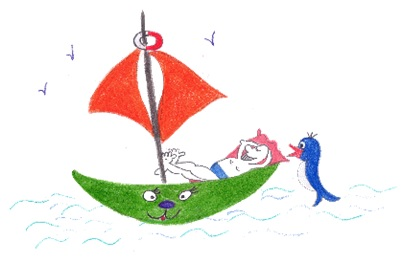du denkst wahrscheinlich, dass Wasser schwere Sachen nach unten zieht, und leichte Dinge oben schwimmen. Das ist genau so! Warum kann dann ein schweres Schiff sich auf dem Wasser halten?
Schiffe schwimmen nicht nur, weil sie Motoren und andere Maschinen haben, aber deshalb bewegen sie sich. Du sagst dann, vielleicht, ein Schiff schwimmt, weil es eine runde Form unten her hat. Auch nicht ganz deshalb. Fluss-Schiffe, zum Beispiel, haben keinen runden oder spitz nach unten zeigenden Boden; sie sind unten ganz flach.
Das Wichtigste für ein Schiff ist, damit es schwimmen kann, die richtige Gewichtsverteilung.
Wenn du selbst ein Schiff bauen möchtest, musst du das Gewicht von der ganzen Konstruktion so rechnen, dass das Gewicht von dem Ganzen, auch der Teil, der nicht im Wasser ist, mit Passagieren und Gepäck, nicht schwerer wird als die Konstruktion voll mit Wasser. Dann wird nämlich dein Schiff leichter sein als Wasser, und du kannst mit Ihm auf Reisen gehen. Vergiss aber nicht, dass kein Wasser in dein Schiff fließen darf, sonst kann eine Katastrophe geschehen und dein Schiff wird sinken…
Warum wissen wir (noch) nichts über außerirdisches Leben?
(почему мы еще ничего не знаем о внеземной жизни?)
Unser Planet «Erde» ist ein reisender Stern (наша планета «Земля» является путешествующей звездой = небесным телом): wie zum Beispiel Venus oder Jupiter (как, например, Венера или Юпитер). Das Wort Planet kommt aus dem Griechischen und bedeutet «Wanderer» (слово «планета» происходит из греческого языка и означает «путешествующий»).
Könnte es in unserem Sonnensystem (может ли в Солнечной системе) – wo unsere Erde zu Hause ist (где наша земля дома = где находится наша земля) – noch Leben geben (существовать еще /какая-то/ жизнь)?
Der kleine Merkur, beispielsweise, ist zu heiß und ohne Atmosphäre (на маленьком Меркурии, например, слишком жарко и нет никакой атмосферы). Saturn, Uranus und Neptun sind aber vermutlich zu kalt (Сатурн, Ураний и Нептун, предположительно, являются слишком холодными мирами; vermuten – предполагать) damit es dort Leben geben könnte (чтобы там могла бы быть жизнь).
Sind wir also allein im ganzen Universum (стало быть, мы одни во всей вселенной)? Gibt es kein anderes Leben auf einem weiteren Planeten (нет ли какой-нибудь другой жизни на отдаленных планетах)?
Wenn doch (и если все-таки /существует жизнь на других планетах/), sind diese Zivilisationen weiter entwickelt als wir (то может ли быть, что эти цивилизации более развиты, чем мы)?
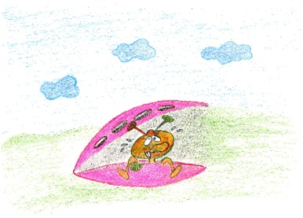Diese Fragen können Wissenschaftler noch nicht beantworten (ученые пока не могут ответить на эти вопросы), aber vielleicht empfangen wir eines Tages ein Signal von einem fernen Planeten, von anderen Lebewesen (но, может быть, однажды мы получим сигнал с одной отдаленной планеты, от других живых существ; empfangen – принимать, получать).
Vielleicht sind aber Bewohner von einem anderen Planeten noch nicht so weit entwickelt (но возможно, что обитатели других планет еще не так далеко развиты = не набрались знаний), dass sie ein Teleskop bauen könnten (для того, чтобы они могли бы построить телескоп) und uns Signale schicken (и послать нам сигналы).
Es ist auch möglich, dass es im Universum primitive Lebensformen gibt (возможно также, что во вселенной существует примитивные формы жизни = примитивные существа), die von Technologie noch gar nichts wissen (которые еще вовсе ничего не знают о технологии).
All diese Fragen werden viele Astronomen und Astrophysiker noch lange beschäftigen (все эти вопросы еще долго будут занимать многих астрономов и астрофизиков).
Es kann sein, dass du einer von jenen sein wirst (может быть, ты станешь одним из этих ученых), der eine Technologie mitentwickeln hilft (который поможет разработать технологию; entwickeln – развивать, разрабатывать), die es möglich machen wird die riesigen Distanzen im Universum zu überwinden (которая сделает возможным преодоление огромных межпланетных расстояний; überwinden – преодолеть).
Unser Planet «Erde» ist ein reisender Stern: wie zum Beispiel Venus oder Jupiter. Das Wort Planet kommt aus dem Griechischen und bedeutet «Wanderer».
Könnte es in unserem Sonnensystem – wo unsere Erde zu Hause ist – noch Leben geben?
Der kleine Merkur, beispielsweise, ist zu heiß und ohne Atmosphäre. Saturn, Uranus und Neptun sind aber vermutlich zu kalt, damit es dort Leben geben könnte.
Sind wir also allein im ganzen Universum? Gibt es kein anderes Leben auf einem weiteren Planeten?
Wenn doch, sind diese Zivilisationen weiter entwickelt als wir?
Diese Fragen können Wissenschaftler noch nicht beantworten, aber vielleicht empfangen wir eines Tages ein Signal von einem fernen Planeten, von anderen Lebewesen.
Vielleicht sind aber Bewohner von einem anderen Planeten noch nicht so weit entwickelt, dass sie ein Teleskop bauen könnten und uns Signale schicken.
Es ist auch möglich, dass es im Universum primitive Lebensformen gibt, die von Technologie noch gar nichts wissen.
All diese Fragen werden viele Astronomen und Astrophysiker noch lange beschäftigen.
Es kann sein, dass du einer von jenen sein wirst, der eine Technologie mitentwickeln hilft, die es möglich machen wird die riesigen Distanzen im Universum zu überwinden.